from google.colab import drive
drive.mount('/content/drive')Drive already mounted at /content/drive; to attempt to forcibly remount, call drive.mount("/content/drive", force_remount=True).Businesses like banks which provide service have to worry about problem of ‘Customer Churn’ i.e. customers leaving and joining another service provider. It is important to understand which aspects of the service influence a customer’s decision in this regard. Management can concentrate efforts on improvement of service, keeping in mind these priorities.
You as a Data scientist with the bank need to build a neural network based classifier that can determine whether a customer will leave the bank or not in the next 6 months.
CustomerId: Unique ID which is assigned to each customer
Surname: Last name of the customer
CreditScore: It defines the credit history of the customer.
Geography: A customer’s location
Gender: It defines the Gender of the customer
Age: Age of the customer
Tenure: Number of years for which the customer has been with the bank
NumOfProducts: refers to the number of products that a customer has purchased through the bank.
Balance: Account balance
HasCrCard: It is a categorical variable which decides whether the customer has credit card or not.
EstimatedSalary: Estimated salary
isActiveMember: Is is a categorical variable which decides whether the customer is active member of the bank or not ( Active member in the sense, using bank products regularly, making transactions etc )
Exited : whether or not the customer left the bank within six month. It can take two values ** 0=No ( Customer did not leave the bank ) ** 1=Yes ( Customer left the bank )
from google.colab import drive
drive.mount('/content/drive')Drive already mounted at /content/drive; to attempt to forcibly remount, call drive.mount("/content/drive", force_remount=True).# Installing the libraries with the specified version.
!pip install imbalanced-learn seaborn --quiet --user# Libraries to help with reading and manipulating data
import pandas as pd
import numpy as np
# libaries to help with data visualization
import matplotlib.pyplot as plt
import seaborn as sns
# Library to split data
from sklearn.model_selection import train_test_split
# library to import to standardize the data
from sklearn.preprocessing import StandardScaler, LabelEncoder
# importing different functions to build models
import tensorflow as tf
from tensorflow import keras
from keras import backend
from keras.models import Sequential
from keras.layers import Dense, Dropout
# importing SMOTE
from imblearn.over_sampling import SMOTE
# importing metrics
from sklearn.metrics import confusion_matrix,roc_curve,classification_report,recall_score, f1_score, accuracy_score, precision_score
import random
import time
# Library to avoid the warnings
import warnings
warnings.filterwarnings("ignore")# loading data into a pandas dataframe
bank_data = pd.read_csv("/content/drive/MyDrive/bank.csv")
# copy the original data set.
data = bank_data.copy()View the first 5 rows of the dataset
data.head()| RowNumber | CustomerId | Surname | CreditScore | Geography | Gender | Age | Tenure | Balance | NumOfProducts | HasCrCard | IsActiveMember | EstimatedSalary | Exited | |
|---|---|---|---|---|---|---|---|---|---|---|---|---|---|---|
| 0 | 1 | 15634602 | Hargrave | 619 | France | Female | 42 | 2 | 0.00 | 1 | 1 | 1 | 101348.88 | 1 |
| 1 | 2 | 15647311 | Hill | 608 | Spain | Female | 41 | 1 | 83807.86 | 1 | 0 | 1 | 112542.58 | 0 |
| 2 | 3 | 15619304 | Onio | 502 | France | Female | 42 | 8 | 159660.80 | 3 | 1 | 0 | 113931.57 | 1 |
| 3 | 4 | 15701354 | Boni | 699 | France | Female | 39 | 1 | 0.00 | 2 | 0 | 0 | 93826.63 | 0 |
| 4 | 5 | 15737888 | Mitchell | 850 | Spain | Female | 43 | 2 | 125510.82 | 1 | 1 | 1 | 79084.10 | 0 |
View the last 5 rows of the dataset
data.tail()| RowNumber | CustomerId | Surname | CreditScore | Geography | Gender | Age | Tenure | Balance | NumOfProducts | HasCrCard | IsActiveMember | EstimatedSalary | Exited | |
|---|---|---|---|---|---|---|---|---|---|---|---|---|---|---|
| 9995 | 9996 | 15606229 | Obijiaku | 771 | France | Male | 39 | 5 | 0.00 | 2 | 1 | 0 | 96270.64 | 0 |
| 9996 | 9997 | 15569892 | Johnstone | 516 | France | Male | 35 | 10 | 57369.61 | 1 | 1 | 1 | 101699.77 | 0 |
| 9997 | 9998 | 15584532 | Liu | 709 | France | Female | 36 | 7 | 0.00 | 1 | 0 | 1 | 42085.58 | 1 |
| 9998 | 9999 | 15682355 | Sabbatini | 772 | Germany | Male | 42 | 3 | 75075.31 | 2 | 1 | 0 | 92888.52 | 1 |
| 9999 | 10000 | 15628319 | Walker | 792 | France | Female | 28 | 4 | 130142.79 | 1 | 1 | 0 | 38190.78 | 0 |
Understand the shape of the dataset
data.shape(10000, 14)There are 10000 rows and 14 columns
Check the data types of the columns for the dataset.
data.info()<class 'pandas.core.frame.DataFrame'>
RangeIndex: 10000 entries, 0 to 9999
Data columns (total 14 columns):
# Column Non-Null Count Dtype
--- ------ -------------- -----
0 RowNumber 10000 non-null int64
1 CustomerId 10000 non-null int64
2 Surname 10000 non-null object
3 CreditScore 10000 non-null int64
4 Geography 10000 non-null object
5 Gender 10000 non-null object
6 Age 10000 non-null int64
7 Tenure 10000 non-null int64
8 Balance 10000 non-null float64
9 NumOfProducts 10000 non-null int64
10 HasCrCard 10000 non-null int64
11 IsActiveMember 10000 non-null int64
12 EstimatedSalary 10000 non-null float64
13 Exited 10000 non-null int64
dtypes: float64(2), int64(9), object(3)
memory usage: 1.1+ MBThere are no missing values
data.duplicated().sum() # checking for duplicatesnp.int64(0)There are no duplicate rows
data.isna().sum() # checking for missing values| 0 | |
|---|---|
| RowNumber | 0 |
| CustomerId | 0 |
| Surname | 0 |
| CreditScore | 0 |
| Geography | 0 |
| Gender | 0 |
| Age | 0 |
| Tenure | 0 |
| Balance | 0 |
| NumOfProducts | 0 |
| HasCrCard | 0 |
| IsActiveMember | 0 |
| EstimatedSalary | 0 |
| Exited | 0 |
No NULL values in the columns
data.nunique()| 0 | |
|---|---|
| RowNumber | 10000 |
| CustomerId | 10000 |
| Surname | 2932 |
| CreditScore | 460 |
| Geography | 3 |
| Gender | 2 |
| Age | 70 |
| Tenure | 11 |
| Balance | 6382 |
| NumOfProducts | 4 |
| HasCrCard | 2 |
| IsActiveMember | 2 |
| EstimatedSalary | 9999 |
| Exited | 2 |
RowNumber and CustomerId are unique identifiers, so they may not add value for modeling so drop them.
Surname has 2,932 unique values — it’s likely not useful unless you’re doing very specific personalization or name-based analysis.
data = data.drop(['RowNumber', 'CustomerId', 'Surname'], axis=1)# function to plot a boxplot and a histogram along the same scale.
def histogram_boxplot(data, feature, figsize=(12, 7), kde=False, bins='auto',
zscore_filter=False, z_thresh=3, color='cornflowerblue'):
"""
Combined Boxplot and Histogram with enhancements.
Parameters:
- data: DataFrame
- feature: column name (str)
- figsize: tuple, default (12, 7)
- kde: bool, show KDE density line
- bins: int or 'auto' or None
- zscore_filter: bool, remove outliers using z-score
- z_thresh: threshold for z-score filtering
- color: color for plots
"""
# Filter out missing values
feature_data = data[feature].dropna()
# Optional Z-score filtering
if zscore_filter:
from scipy.stats import zscore
z_scores = np.abs(zscore(feature_data))
feature_data = feature_data[z_scores < z_thresh]
# Plot setup
fig, (ax_box, ax_hist) = plt.subplots(
nrows=2,
sharex=True,
gridspec_kw={"height_ratios": (0.25, 0.75)},
figsize=figsize,
)
sns.set_style("whitegrid")
# Boxplot
sns.boxplot(x=feature_data, ax=ax_box, showmeans=True,
meanprops={"marker": "o", "markerfacecolor": "white", "markeredgecolor": "black"},
color=color)
ax_box.set(xlabel='')
ax_box.set_title(f"Distribution of '{feature}'", fontsize=14, weight='bold')
# Histogram
sns.histplot(feature_data, kde=kde, bins=bins, ax=ax_hist, color=color, edgecolor='black')
# Mean and median lines
mean_val = feature_data.mean()
median_val = feature_data.median()
ax_hist.axvline(mean_val, color="green", linestyle="--", label=f"Mean: {mean_val:.2f}")
ax_hist.axvline(median_val, color="red", linestyle="-", label=f"Median: {median_val:.2f}")
# Decorations
ax_hist.legend()
ax_hist.set_xlabel(feature)
ax_hist.set_ylabel("Count")
plt.tight_layout()
plt.show()# function to create labeled barplots
def labeled_barplot(data, feature, perc=False, n=None):
"""
Barplot with percentage at the top
data: dataframe
feature: dataframe column
perc: whether to display percentages instead of count (default is False)
n: displays the top n category levels (default is None, i.e., display all levels)
"""
total = len(data[feature]) # length of the column
count = data[feature].nunique()
if n is None:
plt.figure(figsize=(count + 1, 5))
else:
plt.figure(figsize=(n + 1, 5))
plt.xticks(rotation=90, fontsize=15)
ax = sns.countplot(
data=data,
x=feature,
palette="Paired",
order=data[feature].value_counts().index[:n].sort_values(),
)
for p in ax.patches:
if perc == True:
label = "{:.1f}%".format(
100 * p.get_height() / total
) # percentage of each class of the category
else:
label = p.get_height() # count of each level of the category
x = p.get_x() + p.get_width() / 2 # width of the plot
y = p.get_height() # height of the plot
ax.annotate(
label,
(x, y),
ha="center",
va="center",
size=12,
xytext=(0, 5),
textcoords="offset points",
) # annotate the percentage
plt.show() # show the plothistogram_boxplot(data, 'CreditScore')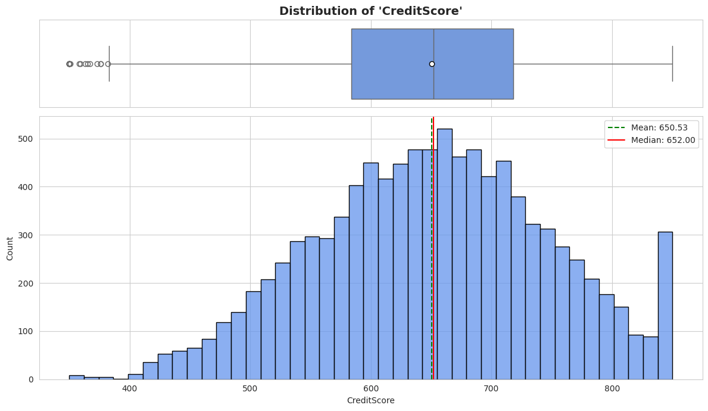
Mean (green dashed line) and Median (red solid line) are quite close, indicating a roughly symmetric distribution.
There are some mild outliers visible in the boxplot, but nothing extreme.
The distribution is unimodal with a slight skew.
histogram_boxplot(data, 'Age')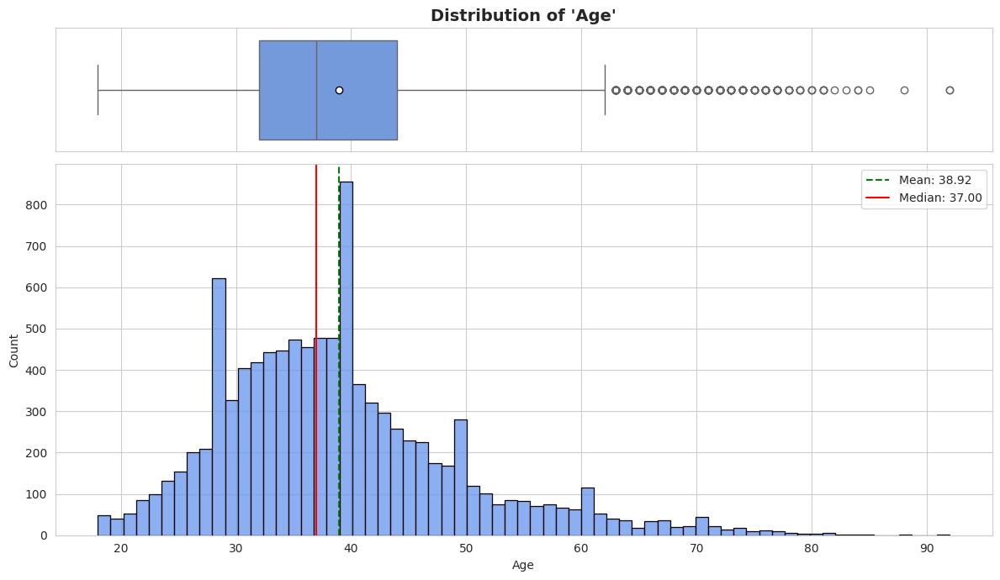
The mean and median are slightly apart, showing a bit of right skew.
There’s a cluster of customers in the 30–40 age range.
The boxplot shows visible outliers above ~60 years.
histogram_boxplot(data, 'Balance')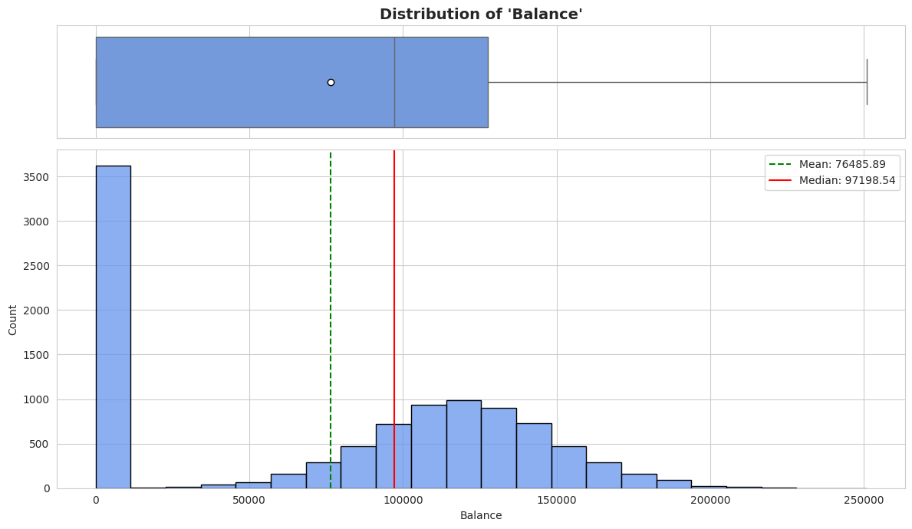
A significant number of customers have a zero balance, visible as a spike at the start.
The distribution is heavily right-skewed, with many customers holding very low balances and fewer with high ones.
histogram_boxplot(data, 'EstimatedSalary')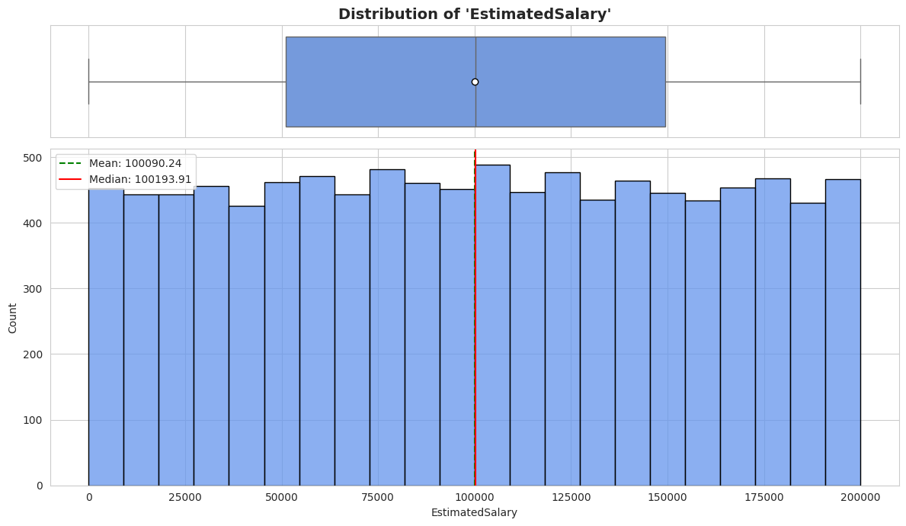
The distribution is fairly uniform.
There’s no obvious skew, and the mean and median align closely.
The boxplot doesn’t show any significant outliers either.
labeled_barplot(data, "Exited", perc=True)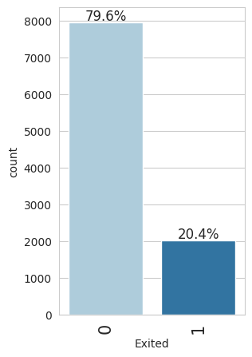
About 20% of customers have exited (churned), while 80% have not.
This shows a clear class imbalance, which is important to consider if we’re planning to build a predictive model.
labeled_barplot(data, "Geography", perc=True)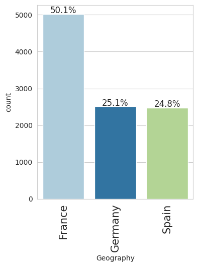
France has the largest share of customers.
Spain and Germany have significantly smaller percentages in comparison.
labeled_barplot(data, "Gender", perc=True)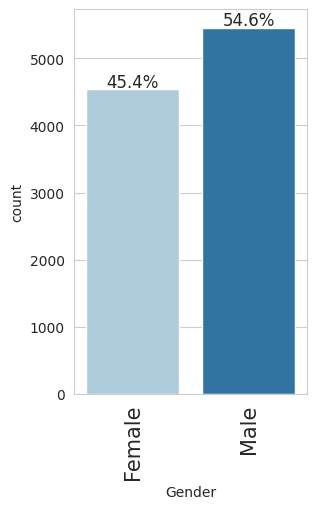
The dataset is fairly balanced between Male and Female customers.
The difference is small, with slightly more males than females.
labeled_barplot(data, "Tenure", perc=True)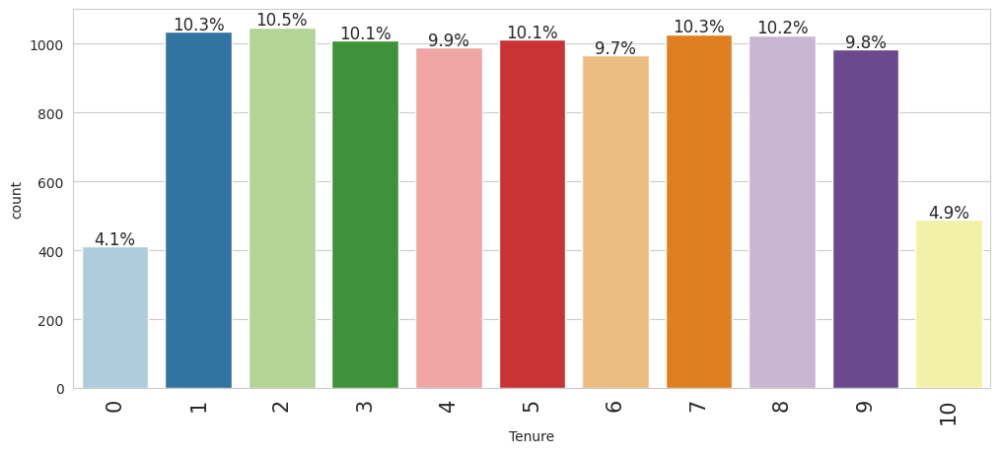
The tenure is evenly distributed, with each tenure value from 0 to 10 years having a relatively similar share.
There’s no major spike or drop-off, suggesting a steady inflow and retention pattern.
labeled_barplot(data, "NumOfProducts", perc=True)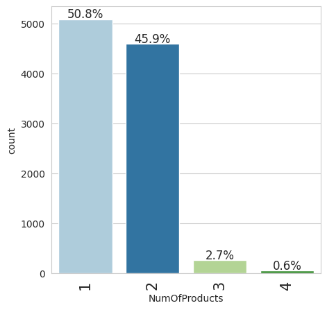
Most customers have 1 or 2 products.
Very few have 3 or 4 products, with 4 being extremely rare.
labeled_barplot(data, "HasCrCard", perc=True)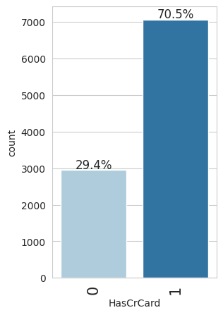
The majority of customers (70.5%) have a credit card.
A smaller group (29.4%) do not.
labeled_barplot(data, "IsActiveMember", perc=True)
About 51.5% of customers are active members (1)
About 48.5% are inactive (0)
# function to plot stacked bar chart
def stacked_barplot(data, predictor, target):
"""
Print raw counts and plot a stacked bar chart of predictor vs. target.
Parameters:
- data: DataFrame
- predictor: independent/categorical variable
- target: binary target variable (e.g., 'Exited')
"""
count = data[predictor].nunique()
sorter = data[target].value_counts().index[-1]
# Raw counts
tab1 = pd.crosstab(data[predictor], data[target], margins=True).sort_values(
by=sorter, ascending=False
)
print(tab1)
print("-" * 120)
# Proportions normalized by row
tab = pd.crosstab(data[predictor], data[target], normalize="index").sort_values(
by=sorter, ascending=False
)
# Plot
ax = tab.plot(kind="bar", stacked=True, figsize=(count + 1, 5), colormap="Set2", edgecolor='black')
plt.title(f"{target} Distribution across {predictor}", fontsize=14, fontweight='bold')
plt.ylabel("Proportion")
plt.xlabel(predictor)
plt.xticks(rotation=0)
plt.legend(title=target, loc="upper left", bbox_to_anchor=(1, 1), frameon=False)
plt.tight_layout()
plt.show()###Correlation plot
# defining the list of numerical columns
cols_list = ["CreditScore","Age","Tenure","Balance","EstimatedSalary"]plt.figure(figsize=(15, 7))
sns.heatmap(data[cols_list].corr(), annot=True, vmin=-1, vmax=1, fmt=".2f", cmap="Spectral")
plt.show()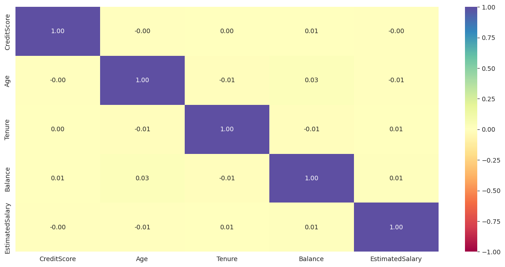
Most variables show very weak or no correlation with each other.
Age shows slight positive correlation with Balance.
stacked_barplot(data, "Geography", "Exited" )Exited 0 1 All
Geography
All 7963 2037 10000
Germany 1695 814 2509
France 4204 810 5014
Spain 2064 413 2477
------------------------------------------------------------------------------------------------------------------------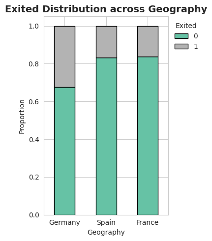
Germany has the highest churn rate (~32% exited).
France has a much lower churn rate, despite having a similar number of total exits as Germany.
Spain sits in the middle, with a moderate churn rate.
stacked_barplot(data, "Gender", "Exited")Exited 0 1 All
Gender
All 7963 2037 10000
Female 3404 1139 4543
Male 4559 898 5457
------------------------------------------------------------------------------------------------------------------------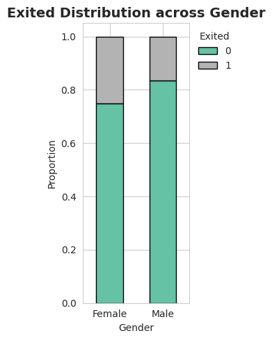
Females have a noticeably higher churn rate compared to males.
Gender appears to be a potential predictor of churn.
stacked_barplot(data, "HasCrCard", "Exited")Exited 0 1 All
HasCrCard
All 7963 2037 10000
1 5631 1424 7055
0 2332 613 2945
------------------------------------------------------------------------------------------------------------------------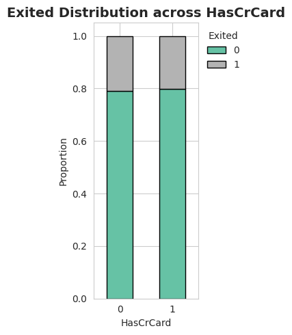
The churn rate is nearly identical between customers with and without a credit card.
This implies that credit card ownership alone isn’t a strong predictor of churn.
stacked_barplot(data, "IsActiveMember", "Exited")Exited 0 1 All
IsActiveMember
All 7963 2037 10000
0 3547 1302 4849
1 4416 735 5151
------------------------------------------------------------------------------------------------------------------------
Inactive members have a much higher churn rate compared to active ones.
This makes IsActiveMember a strong predictor of customer retention.
plt.figure(figsize=(5,5))
sns.boxplot(y='CreditScore',x='Exited',data=data)
plt.title("Credit Score Distribution by Churn Status (Exited)", fontsize=13)
plt.show()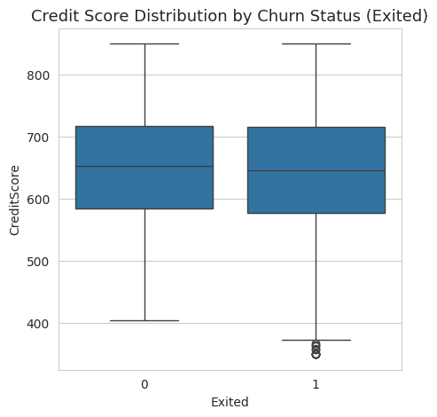
The median credit scores are very similar for both groups (Exited = 0 and 1).
The spread and IQR (interquartile range) are also similar, indicating that credit score does not differ significantly between churned and retained customers.
A few outliers exist in both groups.
plt.figure(figsize=(5,5))
sns.boxplot(y='Age',x='Exited',data=data)
plt.title("Age Distribution by Churn Status (Exited)", fontsize=13)
plt.show()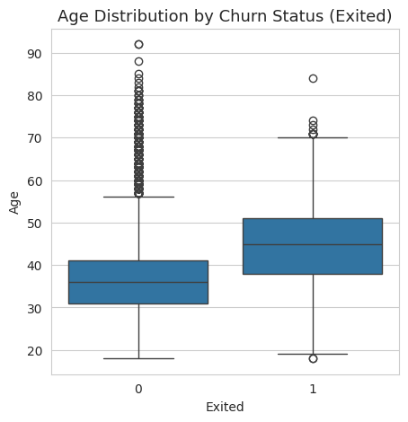
Customers who exited tend to be older on average.
The median age is higher for churned customers.
Younger customers are less likely to churn.
This indicates that age is a strong predictor of churn — older customers are more at risk.
plt.figure(figsize=(5,5))
sns.boxplot(y='Balance',x='Exited',data=data, palette="Set1")
plt.title("Balance Distribution by Churn Status (Exited)", fontsize=13)
plt.show()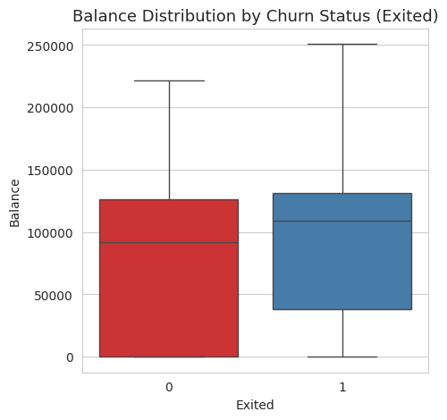
The median balance is slightly higher for customers who exited.
There’s a larger spread in the balance among churned customers.
A significant number of customers have a balance of 0 in both groups, but more so among those who stayed.
The upper whisker and outliers suggest some churned customers held substantially higher balances.
plt.figure(figsize=(5,5))
sns.boxplot(y='EstimatedSalary',x='Exited',data=data, palette="Set3")
plt.title("Estimated Salary Distribution by Churn Status (Exited)", fontsize=13)
plt.show()
The median salaries are nearly identical for both churned and non-churned customers.
Both groups exhibit a similar distribution and spread.
There are no strong outlier trends or distinct differences in salary ranges between the two.
This indicates that EstimatedSalary has minimal influence on churn in this dataset.
plt.figure(figsize=(5,5))
sns.boxplot(y='Tenure',x='Exited',data=data,palette="Set1")
plt.title("Tenure Distribution by Churn Status (Exited)", fontsize=13)
plt.show()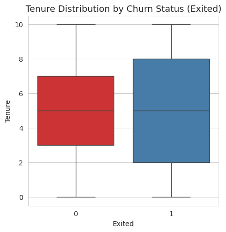
The median tenure is similar for both churned and retained customers.
Customers who exited show slightly more spread in tenure.
No strong relationship is visually evident — churn happens across all tenure levels.
This suggests tenure alone may not be a strong predictor of churn, but it could interact with other features like age or number of products.
plt.figure(figsize=(5,5))
sns.boxplot(y='NumOfProducts',x='Exited',data=data,palette='Set2')
plt.title("Number of Products Distribution by Churn Status (Exited)", fontsize=13)
plt.show()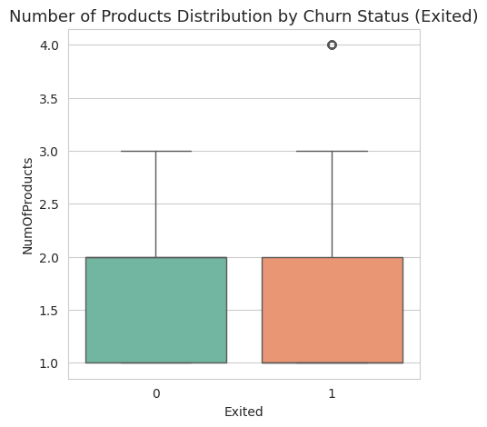
Most customers have 1 or 2 products, regardless of churn status.
Customers with 4 products are almost exclusively churned, suggesting that higher product count may correlate with dissatisfaction.
def prepare_dataset(df):
# One-hot encode all object (categorical) columns, drop first to avoid dummy trap
df = pd.get_dummies(df, columns=df.select_dtypes(include=["object"]).columns.tolist(), drop_first=True)
# Ensure all data is float type.
df = df.astype(float)
# Feature engineering: add HasBalance flag
df["HasBalance"] = (df["Balance"] > 0).astype(float)
return df# Apply the function to the original dataset
p_data = prepare_dataset(data)
# Show the cleaned and processed dataset
p_data.head()| CreditScore | Age | Tenure | Balance | NumOfProducts | HasCrCard | IsActiveMember | EstimatedSalary | Exited | Geography_Germany | Geography_Spain | Gender_Male | HasBalance | |
|---|---|---|---|---|---|---|---|---|---|---|---|---|---|
| 0 | 619.0 | 42.0 | 2.0 | 0.00 | 1.0 | 1.0 | 1.0 | 101348.88 | 1.0 | 0.0 | 0.0 | 0.0 | 0.0 |
| 1 | 608.0 | 41.0 | 1.0 | 83807.86 | 1.0 | 0.0 | 1.0 | 112542.58 | 0.0 | 0.0 | 1.0 | 0.0 | 1.0 |
| 2 | 502.0 | 42.0 | 8.0 | 159660.80 | 3.0 | 1.0 | 0.0 | 113931.57 | 1.0 | 0.0 | 0.0 | 0.0 | 1.0 |
| 3 | 699.0 | 39.0 | 1.0 | 0.00 | 2.0 | 0.0 | 0.0 | 93826.63 | 0.0 | 0.0 | 0.0 | 0.0 | 0.0 |
| 4 | 850.0 | 43.0 | 2.0 | 125510.82 | 1.0 | 1.0 | 1.0 | 79084.10 | 0.0 | 0.0 | 1.0 | 0.0 | 1.0 |
X = p_data.drop(['Exited'],axis=1)
y = p_data['Exited']
# Splitting the dataset into the Training and Test set.
X_train, X_test, y_train, y_test = train_test_split(X,y, test_size = 0.2, random_state = 42,stratify = y)
# Splitting the Train dataset into the Training and Validation set.
X_train, X_valid, y_train, y_valid = train_test_split(X_train,y_train, test_size = 0.2, random_state = 42,stratify = y_train)
#Printing the shapes.
print(X_train.shape,y_train.shape)
print(X_valid.shape,y_valid.shape)
print(X_test.shape,y_test.shape)(6400, 12) (6400,)
(1600, 12) (1600,)
(2000, 12) (2000,)p_data.info()
<class 'pandas.core.frame.DataFrame'>
RangeIndex: 10000 entries, 0 to 9999
Data columns (total 13 columns):
# Column Non-Null Count Dtype
--- ------ -------------- -----
0 CreditScore 10000 non-null float64
1 Age 10000 non-null float64
2 Tenure 10000 non-null float64
3 Balance 10000 non-null float64
4 NumOfProducts 10000 non-null float64
5 HasCrCard 10000 non-null float64
6 IsActiveMember 10000 non-null float64
7 EstimatedSalary 10000 non-null float64
8 Exited 10000 non-null float64
9 Geography_Germany 10000 non-null float64
10 Geography_Spain 10000 non-null float64
11 Gender_Male 10000 non-null float64
12 HasBalance 10000 non-null float64
dtypes: float64(13)
memory usage: 1015.8 KB# Normalize the data
scaler = StandardScaler()
num_cols = ['CreditScore', 'Age', 'Tenure', 'Balance', 'EstimatedSalary']
X_train[num_cols] = scaler.fit_transform(X_train[num_cols])
X_valid[num_cols] = scaler.transform(X_valid[num_cols])
X_test[num_cols] = scaler.transform(X_test[num_cols])Write down the logic for choosing the metric that would be the best metric for this business scenario.
Let’s create a function for plotting the confusion matrix
def make_confusion_matrix(actual_targets, predicted_targets):
"""
To plot the confusion_matrix with percentages
actual_targets: actual target (dependent) variable values
predicted_targets: predicted target (dependent) variable values
"""
cm = confusion_matrix(actual_targets, predicted_targets)
labels = np.asarray(
[
["{0:0.0f}".format(item) + "\n{0:.2%}".format(item / cm.flatten().sum())]
for item in cm.flatten()
]
).reshape(cm.shape[0], cm.shape[1])
plt.figure(figsize=(6, 4))
sns.heatmap(cm, annot=labels, fmt="")
plt.ylabel("True label")
plt.xlabel("Predicted label")Let’s create two blank dataframes that will store the recall values for all the models we build.
train_metric_df = pd.DataFrame(columns=["recall"])
valid_metric_df = pd.DataFrame(columns=["recall"])epochs = 50
batch_size = 32def plot(history, name):
"""
Function to plot loss/accuracy
history: an object which stores the metrics and losses.
name: can be one of Loss or Accuracy
"""
fig, ax = plt.subplots() #Creating a subplot with figure and axes.
plt.plot(history.history[name]) #Plotting the train accuracy or train loss
plt.plot(history.history['val_'+name]) #Plotting the validation accuracy or validation loss
plt.title('Model ' + name.capitalize()) #Defining the title of the plot.
plt.ylabel(name.capitalize()) #Capitalizing the first letter.
plt.xlabel('Epoch') #Defining the label for the x-axis.
fig.legend(['Train', 'Validation'], loc="outside right upper") #Defining the legend, loc controls the position of the legend.# defining a function to compute different metrics to check performance of a classification model built using statsmodels
def model_performance_classification(
model, predictors, target, threshold=0.5
):
"""
Function to compute different metrics to check classification model performance
model: classifier
predictors: independent variables
target: dependent variable
threshold: threshold for classifying the observation as class 1
"""
# checking which probabilities are greater than threshold
pred = model.predict(predictors) > threshold
# pred_temp = model.predict(predictors) > threshold
# # rounding off the above values to get classes
# pred = np.round(pred_temp)
acc = accuracy_score(target, pred) # to compute Accuracy
recall = recall_score(target, pred, average='weighted') # to compute Recall
precision = precision_score(target, pred, average='weighted') # to compute Precision
f1 = f1_score(target, pred, average='weighted') # to compute F1-score
# creating a dataframe of metrics
df_perf = pd.DataFrame(
{"Accuracy": acc, "Recall": recall, "Precision": precision, "F1 Score": f1,},
index=[0],
)
return df_perf# Calculate class weights for imbalanced dataset
cw = (y_train.shape[0]) / np.bincount(y_train.astype(int))
# Create a dictionary mapping class indices to their respective class weights
cw_dict = {}
for i in range(cw.shape[0]):
cw_dict[i] = cw[i]
cw_dict{0: np.float64(1.2558869701726845), 1: np.float64(4.9079754601226995)}backend.clear_session()
#Fixing the seed for random number generators so that we can ensure we receive the same output everytime
np.random.seed(2)
random.seed(2)
tf.random.set_seed(2)model_0 = Sequential()
model_0.add(Dense(14, activation='relu', input_dim=X_train.shape[1]))
model_0.add(Dense(10, activation='relu'))
model_0.add(Dense(7, activation='relu'))
model_0.add(Dense(1, activation='sigmoid'))
model_0.summary()Model: "sequential"
┏━━━━━━━━━━━━━━━━━━━━━━━━━━━━━━━━━┳━━━━━━━━━━━━━━━━━━━━━━━━┳━━━━━━━━━━━━━━━┓ ┃ Layer (type) ┃ Output Shape ┃ Param # ┃ ┡━━━━━━━━━━━━━━━━━━━━━━━━━━━━━━━━━╇━━━━━━━━━━━━━━━━━━━━━━━━╇━━━━━━━━━━━━━━━┩ │ dense (Dense) │ (None, 14) │ 182 │ ├─────────────────────────────────┼────────────────────────┼───────────────┤ │ dense_1 (Dense) │ (None, 10) │ 150 │ ├─────────────────────────────────┼────────────────────────┼───────────────┤ │ dense_2 (Dense) │ (None, 7) │ 77 │ ├─────────────────────────────────┼────────────────────────┼───────────────┤ │ dense_3 (Dense) │ (None, 1) │ 8 │ └─────────────────────────────────┴────────────────────────┴───────────────┘
Total params: 417 (1.63 KB)
Trainable params: 417 (1.63 KB)
Non-trainable params: 0 (0.00 B)
optimizer = tf.keras.optimizers.SGD()
metrics = [tf.keras.metrics.Recall()]
model_0.compile(loss='binary_crossentropy', optimizer=optimizer, metrics=metrics)
model_0.summary()Model: "sequential"
┏━━━━━━━━━━━━━━━━━━━━━━━━━━━━━━━━━┳━━━━━━━━━━━━━━━━━━━━━━━━┳━━━━━━━━━━━━━━━┓ ┃ Layer (type) ┃ Output Shape ┃ Param # ┃ ┡━━━━━━━━━━━━━━━━━━━━━━━━━━━━━━━━━╇━━━━━━━━━━━━━━━━━━━━━━━━╇━━━━━━━━━━━━━━━┩ │ dense (Dense) │ (None, 14) │ 182 │ ├─────────────────────────────────┼────────────────────────┼───────────────┤ │ dense_1 (Dense) │ (None, 10) │ 150 │ ├─────────────────────────────────┼────────────────────────┼───────────────┤ │ dense_2 (Dense) │ (None, 7) │ 77 │ ├─────────────────────────────────┼────────────────────────┼───────────────┤ │ dense_3 (Dense) │ (None, 1) │ 8 │ └─────────────────────────────────┴────────────────────────┴───────────────┘
Total params: 417 (1.63 KB)
Trainable params: 417 (1.63 KB)
Non-trainable params: 0 (0.00 B)
start = time.time()
history_0 = model_0.fit(X_train, y_train, epochs=25, batch_size=32, validation_data=(X_valid, y_valid), class_weight=cw_dict)
end = time.time()Epoch 1/25 200/200 ━━━━━━━━━━━━━━━━━━━━ 3s 9ms/step - loss: 1.4106 - recall: 0.8971 - val_loss: 0.6884 - val_recall: 0.5951 Epoch 2/25 200/200 ━━━━━━━━━━━━━━━━━━━━ 1s 5ms/step - loss: 1.3439 - recall: 0.6699 - val_loss: 0.6703 - val_recall: 0.6687 Epoch 3/25 200/200 ━━━━━━━━━━━━━━━━━━━━ 2s 9ms/step - loss: 1.2901 - recall: 0.7208 - val_loss: 0.6434 - val_recall: 0.6718 Epoch 4/25 200/200 ━━━━━━━━━━━━━━━━━━━━ 2s 9ms/step - loss: 1.2392 - recall: 0.7358 - val_loss: 0.6158 - val_recall: 0.6687 Epoch 5/25 200/200 ━━━━━━━━━━━━━━━━━━━━ 1s 6ms/step - loss: 1.1903 - recall: 0.7402 - val_loss: 0.5863 - val_recall: 0.6626 Epoch 6/25 200/200 ━━━━━━━━━━━━━━━━━━━━ 3s 7ms/step - loss: 1.1521 - recall: 0.7363 - val_loss: 0.5659 - val_recall: 0.6503 Epoch 7/25 200/200 ━━━━━━━━━━━━━━━━━━━━ 1s 6ms/step - loss: 1.1267 - recall: 0.7346 - val_loss: 0.5509 - val_recall: 0.6564 Epoch 8/25 200/200 ━━━━━━━━━━━━━━━━━━━━ 1s 5ms/step - loss: 1.1091 - recall: 0.7366 - val_loss: 0.5412 - val_recall: 0.6564 Epoch 9/25 200/200 ━━━━━━━━━━━━━━━━━━━━ 1s 3ms/step - loss: 1.0958 - recall: 0.7380 - val_loss: 0.5331 - val_recall: 0.6534 Epoch 10/25 200/200 ━━━━━━━━━━━━━━━━━━━━ 1s 3ms/step - loss: 1.0847 - recall: 0.7386 - val_loss: 0.5255 - val_recall: 0.6411 Epoch 11/25 200/200 ━━━━━━━━━━━━━━━━━━━━ 1s 3ms/step - loss: 1.0757 - recall: 0.7346 - val_loss: 0.5215 - val_recall: 0.6503 Epoch 12/25 200/200 ━━━━━━━━━━━━━━━━━━━━ 1s 3ms/step - loss: 1.0679 - recall: 0.7367 - val_loss: 0.5177 - val_recall: 0.6534 Epoch 13/25 200/200 ━━━━━━━━━━━━━━━━━━━━ 1s 3ms/step - loss: 1.0609 - recall: 0.7356 - val_loss: 0.5144 - val_recall: 0.6534 Epoch 14/25 200/200 ━━━━━━━━━━━━━━━━━━━━ 2s 5ms/step - loss: 1.0553 - recall: 0.7374 - val_loss: 0.5118 - val_recall: 0.6472 Epoch 15/25 200/200 ━━━━━━━━━━━━━━━━━━━━ 1s 4ms/step - loss: 1.0506 - recall: 0.7272 - val_loss: 0.5090 - val_recall: 0.6442 Epoch 16/25 200/200 ━━━━━━━━━━━━━━━━━━━━ 1s 3ms/step - loss: 1.0458 - recall: 0.7258 - val_loss: 0.5070 - val_recall: 0.6411 Epoch 17/25 200/200 ━━━━━━━━━━━━━━━━━━━━ 1s 3ms/step - loss: 1.0408 - recall: 0.7233 - val_loss: 0.5093 - val_recall: 0.6534 Epoch 18/25 200/200 ━━━━━━━━━━━━━━━━━━━━ 1s 3ms/step - loss: 1.0345 - recall: 0.7226 - val_loss: 0.5089 - val_recall: 0.6595 Epoch 19/25 200/200 ━━━━━━━━━━━━━━━━━━━━ 1s 3ms/step - loss: 1.0287 - recall: 0.7316 - val_loss: 0.5055 - val_recall: 0.6595 Epoch 20/25 200/200 ━━━━━━━━━━━━━━━━━━━━ 1s 3ms/step - loss: 1.0222 - recall: 0.7398 - val_loss: 0.5012 - val_recall: 0.6503 Epoch 21/25 200/200 ━━━━━━━━━━━━━━━━━━━━ 1s 3ms/step - loss: 1.0152 - recall: 0.7407 - val_loss: 0.4947 - val_recall: 0.6503 Epoch 22/25 200/200 ━━━━━━━━━━━━━━━━━━━━ 1s 3ms/step - loss: 1.0076 - recall: 0.7431 - val_loss: 0.4942 - val_recall: 0.6595 Epoch 23/25 200/200 ━━━━━━━━━━━━━━━━━━━━ 1s 3ms/step - loss: 0.9996 - recall: 0.7437 - val_loss: 0.4901 - val_recall: 0.6595 Epoch 24/25 200/200 ━━━━━━━━━━━━━━━━━━━━ 1s 3ms/step - loss: 0.9933 - recall: 0.7465 - val_loss: 0.4865 - val_recall: 0.6534 Epoch 25/25 200/200 ━━━━━━━━━━━━━━━━━━━━ 1s 3ms/step - loss: 0.9882 - recall: 0.7517 - val_loss: 0.4857 - val_recall: 0.6687
print(f"Training time: {end - start} seconds")Training time: 29.905046463012695 secondsplot(history_0, 'loss')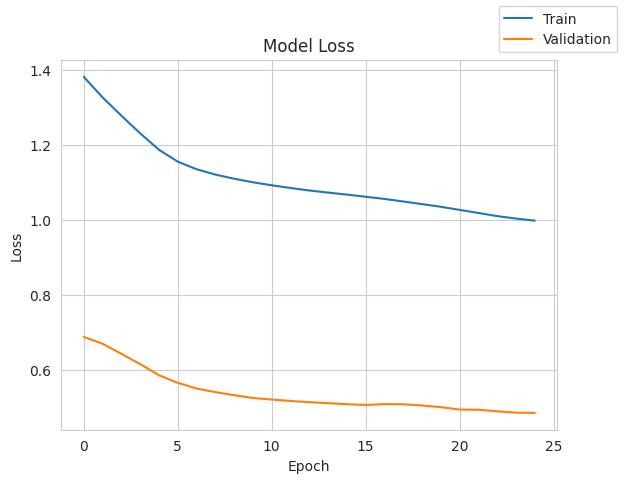
model_0_train_perf = model_performance_classification(model_0, X_train, y_train)
model_0_train_perf200/200 ━━━━━━━━━━━━━━━━━━━━ 0s 1ms/step
| Accuracy | Recall | Precision | F1 Score | |
|---|---|---|---|---|
| 0 | 0.786719 | 0.786719 | 0.828403 | 0.800249 |
model_0_valid_perf = model_performance_classification(model_0, X_valid, y_valid)
model_0_valid_perf50/50 ━━━━━━━━━━━━━━━━━━━━ 0s 2ms/step
| Accuracy | Recall | Precision | F1 Score | |
|---|---|---|---|---|
| 0 | 0.766875 | 0.766875 | 0.811224 | 0.781842 |
backend.clear_session()
#Fixing the seed for random number generators so that we can ensure we receive the same output everytime
np.random.seed(2)
random.seed(2)
tf.random.set_seed(2)# Intializing the neural network
model_1 = Sequential()
model_1.add(Dense(14, activation='relu', input_dim=X_train.shape[1]))
model_1.add(Dense(10, activation='relu'))
model_1.add(Dense(7, activation='relu'))
model_1.add(Dense(1, activation='sigmoid'))model_1.summary()Model: "sequential"
┏━━━━━━━━━━━━━━━━━━━━━━━━━━━━━━━━━┳━━━━━━━━━━━━━━━━━━━━━━━━┳━━━━━━━━━━━━━━━┓ ┃ Layer (type) ┃ Output Shape ┃ Param # ┃ ┡━━━━━━━━━━━━━━━━━━━━━━━━━━━━━━━━━╇━━━━━━━━━━━━━━━━━━━━━━━━╇━━━━━━━━━━━━━━━┩ │ dense (Dense) │ (None, 14) │ 182 │ ├─────────────────────────────────┼────────────────────────┼───────────────┤ │ dense_1 (Dense) │ (None, 10) │ 150 │ ├─────────────────────────────────┼────────────────────────┼───────────────┤ │ dense_2 (Dense) │ (None, 7) │ 77 │ ├─────────────────────────────────┼────────────────────────┼───────────────┤ │ dense_3 (Dense) │ (None, 1) │ 8 │ └─────────────────────────────────┴────────────────────────┴───────────────┘
Total params: 417 (1.63 KB)
Trainable params: 417 (1.63 KB)
Non-trainable params: 0 (0.00 B)
optimizer = tf.keras.optimizers.Adam()
metrics = [tf.keras.metrics.Recall()]
model_1.compile(loss='binary_crossentropy', optimizer=optimizer, metrics=metrics)start = time.time()
history_1 = model_1.fit(X_train, y_train, epochs=25, batch_size=32, validation_data=(X_valid, y_valid), class_weight=cw_dict)
end = time.time()Epoch 1/25 200/200 ━━━━━━━━━━━━━━━━━━━━ 3s 5ms/step - loss: 1.3961 - recall: 0.9510 - val_loss: 0.7061 - val_recall: 0.7669 Epoch 2/25 200/200 ━━━━━━━━━━━━━━━━━━━━ 1s 3ms/step - loss: 1.2745 - recall: 0.7984 - val_loss: 0.6422 - val_recall: 0.6840 Epoch 3/25 200/200 ━━━━━━━━━━━━━━━━━━━━ 1s 3ms/step - loss: 1.1748 - recall: 0.7281 - val_loss: 0.5816 - val_recall: 0.6626 Epoch 4/25 200/200 ━━━━━━━━━━━━━━━━━━━━ 1s 3ms/step - loss: 1.1065 - recall: 0.7229 - val_loss: 0.5533 - val_recall: 0.6656 Epoch 5/25 200/200 ━━━━━━━━━━━━━━━━━━━━ 1s 3ms/step - loss: 1.0785 - recall: 0.7246 - val_loss: 0.5459 - val_recall: 0.6840 Epoch 6/25 200/200 ━━━━━━━━━━━━━━━━━━━━ 1s 3ms/step - loss: 1.0642 - recall: 0.7239 - val_loss: 0.5424 - val_recall: 0.6871 Epoch 7/25 200/200 ━━━━━━━━━━━━━━━━━━━━ 1s 3ms/step - loss: 1.0541 - recall: 0.7279 - val_loss: 0.5378 - val_recall: 0.6840 Epoch 8/25 200/200 ━━━━━━━━━━━━━━━━━━━━ 1s 3ms/step - loss: 1.0454 - recall: 0.7274 - val_loss: 0.5339 - val_recall: 0.6902 Epoch 9/25 200/200 ━━━━━━━━━━━━━━━━━━━━ 1s 3ms/step - loss: 1.0373 - recall: 0.7248 - val_loss: 0.5284 - val_recall: 0.6871 Epoch 10/25 200/200 ━━━━━━━━━━━━━━━━━━━━ 1s 3ms/step - loss: 1.0272 - recall: 0.7256 - val_loss: 0.5272 - val_recall: 0.6871 Epoch 11/25 200/200 ━━━━━━━━━━━━━━━━━━━━ 1s 4ms/step - loss: 1.0164 - recall: 0.7327 - val_loss: 0.5239 - val_recall: 0.6871 Epoch 12/25 200/200 ━━━━━━━━━━━━━━━━━━━━ 1s 4ms/step - loss: 1.0061 - recall: 0.7350 - val_loss: 0.5143 - val_recall: 0.6779 Epoch 13/25 200/200 ━━━━━━━━━━━━━━━━━━━━ 1s 5ms/step - loss: 0.9969 - recall: 0.7395 - val_loss: 0.5154 - val_recall: 0.6902 Epoch 14/25 200/200 ━━━━━━━━━━━━━━━━━━━━ 1s 3ms/step - loss: 0.9878 - recall: 0.7405 - val_loss: 0.5100 - val_recall: 0.6933 Epoch 15/25 200/200 ━━━━━━━━━━━━━━━━━━━━ 1s 3ms/step - loss: 0.9782 - recall: 0.7421 - val_loss: 0.5021 - val_recall: 0.6994 Epoch 16/25 200/200 ━━━━━━━━━━━━━━━━━━━━ 1s 3ms/step - loss: 0.9704 - recall: 0.7387 - val_loss: 0.5000 - val_recall: 0.7025 Epoch 17/25 200/200 ━━━━━━━━━━━━━━━━━━━━ 1s 3ms/step - loss: 0.9629 - recall: 0.7431 - val_loss: 0.4972 - val_recall: 0.7086 Epoch 18/25 200/200 ━━━━━━━━━━━━━━━━━━━━ 1s 3ms/step - loss: 0.9547 - recall: 0.7483 - val_loss: 0.4936 - val_recall: 0.7086 Epoch 19/25 200/200 ━━━━━━━━━━━━━━━━━━━━ 1s 3ms/step - loss: 0.9474 - recall: 0.7545 - val_loss: 0.4919 - val_recall: 0.7117 Epoch 20/25 200/200 ━━━━━━━━━━━━━━━━━━━━ 1s 3ms/step - loss: 0.9412 - recall: 0.7531 - val_loss: 0.4898 - val_recall: 0.7178 Epoch 21/25 200/200 ━━━━━━━━━━━━━━━━━━━━ 1s 3ms/step - loss: 0.9362 - recall: 0.7530 - val_loss: 0.4878 - val_recall: 0.7209 Epoch 22/25 200/200 ━━━━━━━━━━━━━━━━━━━━ 1s 3ms/step - loss: 0.9301 - recall: 0.7515 - val_loss: 0.4846 - val_recall: 0.7239 Epoch 23/25 200/200 ━━━━━━━━━━━━━━━━━━━━ 1s 3ms/step - loss: 0.9244 - recall: 0.7571 - val_loss: 0.4835 - val_recall: 0.7239 Epoch 24/25 200/200 ━━━━━━━━━━━━━━━━━━━━ 1s 3ms/step - loss: 0.9196 - recall: 0.7577 - val_loss: 0.4817 - val_recall: 0.7270 Epoch 25/25 200/200 ━━━━━━━━━━━━━━━━━━━━ 1s 4ms/step - loss: 0.9146 - recall: 0.7575 - val_loss: 0.4793 - val_recall: 0.7270
print(f"Training time: {end - start} seconds")Training time: 25.962740182876587 secondsplot(history_1, 'loss')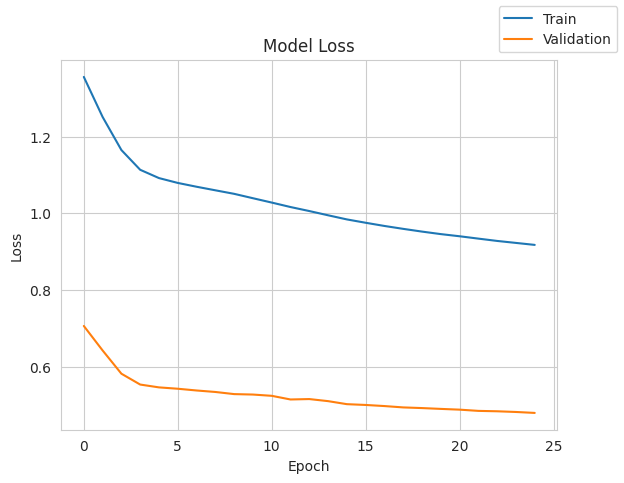
model_1_train_perf = model_performance_classification(model_1, X_train, y_train)
model_1_train_perf200/200 ━━━━━━━━━━━━━━━━━━━━ 1s 2ms/step
| Accuracy | Recall | Precision | F1 Score | |
|---|---|---|---|---|
| 0 | 0.790625 | 0.790625 | 0.839275 | 0.805213 |
model_1_valid_perf = model_performance_classification(model_1, X_valid, y_valid)
model_1_valid_perf50/50 ━━━━━━━━━━━━━━━━━━━━ 0s 2ms/step
| Accuracy | Recall | Precision | F1 Score | |
|---|---|---|---|---|
| 0 | 0.774375 | 0.774375 | 0.826165 | 0.79037 |
backend.clear_session()
#Fixing the seed for random number generators so that we can ensure we receive the same output everytime
np.random.seed(2)
random.seed(2)
tf.random.set_seed(2)# Intializing the neural network
model_2 = Sequential()
model_2.add(Dense(14, activation='relu', input_dim=X_train.shape[1]))
model_2.add(Dropout(0.4))
model_2.add(Dense(10, activation='relu'))
model_2.add(Dropout(0.2))
model_2.add(Dense(7, activation='relu'))
model_2.add(Dropout(0.2))
model_2.add(Dense(1, activation='sigmoid'))model_2.summary()Model: "sequential"
┏━━━━━━━━━━━━━━━━━━━━━━━━━━━━━━━━━┳━━━━━━━━━━━━━━━━━━━━━━━━┳━━━━━━━━━━━━━━━┓ ┃ Layer (type) ┃ Output Shape ┃ Param # ┃ ┡━━━━━━━━━━━━━━━━━━━━━━━━━━━━━━━━━╇━━━━━━━━━━━━━━━━━━━━━━━━╇━━━━━━━━━━━━━━━┩ │ dense (Dense) │ (None, 14) │ 182 │ ├─────────────────────────────────┼────────────────────────┼───────────────┤ │ dropout (Dropout) │ (None, 14) │ 0 │ ├─────────────────────────────────┼────────────────────────┼───────────────┤ │ dense_1 (Dense) │ (None, 10) │ 150 │ ├─────────────────────────────────┼────────────────────────┼───────────────┤ │ dropout_1 (Dropout) │ (None, 10) │ 0 │ ├─────────────────────────────────┼────────────────────────┼───────────────┤ │ dense_2 (Dense) │ (None, 7) │ 77 │ ├─────────────────────────────────┼────────────────────────┼───────────────┤ │ dropout_2 (Dropout) │ (None, 7) │ 0 │ ├─────────────────────────────────┼────────────────────────┼───────────────┤ │ dense_3 (Dense) │ (None, 1) │ 8 │ └─────────────────────────────────┴────────────────────────┴───────────────┘
Total params: 417 (1.63 KB)
Trainable params: 417 (1.63 KB)
Non-trainable params: 0 (0.00 B)
optimizer = tf.keras.optimizers.Adam()
metrics = [tf.keras.metrics.Recall()]
model_2.compile(loss='binary_crossentropy', optimizer=optimizer, metrics=metrics)start = time.time()
history_2 = model_2.fit(X_train, y_train, epochs=25, batch_size=32, validation_data=(X_valid, y_valid), class_weight=cw_dict)
end = time.time()Epoch 1/25 200/200 ━━━━━━━━━━━━━━━━━━━━ 4s 5ms/step - loss: 1.4409 - recall: 0.5024 - val_loss: 0.6443 - val_recall: 0.5215 Epoch 2/25 200/200 ━━━━━━━━━━━━━━━━━━━━ 1s 3ms/step - loss: 1.3743 - recall: 0.5594 - val_loss: 0.6474 - val_recall: 0.5951 Epoch 3/25 200/200 ━━━━━━━━━━━━━━━━━━━━ 1s 3ms/step - loss: 1.3293 - recall: 0.6224 - val_loss: 0.6326 - val_recall: 0.6074 Epoch 4/25 200/200 ━━━━━━━━━━━━━━━━━━━━ 1s 3ms/step - loss: 1.2787 - recall: 0.6794 - val_loss: 0.6069 - val_recall: 0.6288 Epoch 5/25 200/200 ━━━━━━━━━━━━━━━━━━━━ 1s 3ms/step - loss: 1.2609 - recall: 0.6966 - val_loss: 0.6109 - val_recall: 0.6779 Epoch 6/25 200/200 ━━━━━━━━━━━━━━━━━━━━ 1s 3ms/step - loss: 1.2755 - recall: 0.7190 - val_loss: 0.6169 - val_recall: 0.6963 Epoch 7/25 200/200 ━━━━━━━━━━━━━━━━━━━━ 2s 5ms/step - loss: 1.2528 - recall: 0.7341 - val_loss: 0.6160 - val_recall: 0.6810 Epoch 8/25 200/200 ━━━━━━━━━━━━━━━━━━━━ 1s 4ms/step - loss: 1.2177 - recall: 0.7443 - val_loss: 0.6040 - val_recall: 0.6871 Epoch 9/25 200/200 ━━━━━━━━━━━━━━━━━━━━ 1s 4ms/step - loss: 1.2104 - recall: 0.7475 - val_loss: 0.5881 - val_recall: 0.6810 Epoch 10/25 200/200 ━━━━━━━━━━━━━━━━━━━━ 1s 3ms/step - loss: 1.2017 - recall: 0.7348 - val_loss: 0.5946 - val_recall: 0.6748 Epoch 11/25 200/200 ━━━━━━━━━━━━━━━━━━━━ 1s 3ms/step - loss: 1.2132 - recall: 0.7288 - val_loss: 0.5987 - val_recall: 0.6871 Epoch 12/25 200/200 ━━━━━━━━━━━━━━━━━━━━ 1s 3ms/step - loss: 1.1820 - recall: 0.7388 - val_loss: 0.6007 - val_recall: 0.7025 Epoch 13/25 200/200 ━━━━━━━━━━━━━━━━━━━━ 1s 3ms/step - loss: 1.1868 - recall: 0.7357 - val_loss: 0.5846 - val_recall: 0.6840 Epoch 14/25 200/200 ━━━━━━━━━━━━━━━━━━━━ 1s 3ms/step - loss: 1.1721 - recall: 0.7177 - val_loss: 0.5899 - val_recall: 0.6840 Epoch 15/25 200/200 ━━━━━━━━━━━━━━━━━━━━ 1s 3ms/step - loss: 1.1819 - recall: 0.7133 - val_loss: 0.5892 - val_recall: 0.6963 Epoch 16/25 200/200 ━━━━━━━━━━━━━━━━━━━━ 1s 3ms/step - loss: 1.1836 - recall: 0.7130 - val_loss: 0.5906 - val_recall: 0.6933 Epoch 17/25 200/200 ━━━━━━━━━━━━━━━━━━━━ 1s 3ms/step - loss: 1.1840 - recall: 0.7267 - val_loss: 0.5924 - val_recall: 0.6902 Epoch 18/25 200/200 ━━━━━━━━━━━━━━━━━━━━ 1s 3ms/step - loss: 1.1622 - recall: 0.7178 - val_loss: 0.5870 - val_recall: 0.6810 Epoch 19/25 200/200 ━━━━━━━━━━━━━━━━━━━━ 1s 3ms/step - loss: 1.1601 - recall: 0.7399 - val_loss: 0.5872 - val_recall: 0.6933 Epoch 20/25 200/200 ━━━━━━━━━━━━━━━━━━━━ 1s 4ms/step - loss: 1.1672 - recall: 0.7261 - val_loss: 0.5775 - val_recall: 0.6779 Epoch 21/25 200/200 ━━━━━━━━━━━━━━━━━━━━ 1s 5ms/step - loss: 1.1670 - recall: 0.7297 - val_loss: 0.5772 - val_recall: 0.6687 Epoch 22/25 200/200 ━━━━━━━━━━━━━━━━━━━━ 1s 4ms/step - loss: 1.1477 - recall: 0.7238 - val_loss: 0.5797 - val_recall: 0.6840 Epoch 23/25 200/200 ━━━━━━━━━━━━━━━━━━━━ 1s 4ms/step - loss: 1.1479 - recall: 0.7190 - val_loss: 0.5766 - val_recall: 0.6963 Epoch 24/25 200/200 ━━━━━━━━━━━━━━━━━━━━ 1s 3ms/step - loss: 1.1481 - recall: 0.7265 - val_loss: 0.5682 - val_recall: 0.6840 Epoch 25/25 200/200 ━━━━━━━━━━━━━━━━━━━━ 1s 3ms/step - loss: 1.1688 - recall: 0.7265 - val_loss: 0.5785 - val_recall: 0.7025
print(f"Training time: {end - start} seconds")Training time: 27.045986652374268 secondsplot(history_2, 'loss')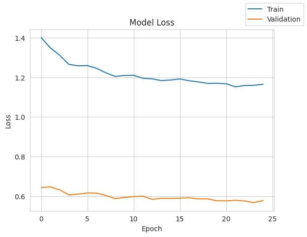
model_2_train_perf = model_performance_classification(model_2, X_train, y_train)
model_2_train_perf200/200 ━━━━━━━━━━━━━━━━━━━━ 0s 1ms/step
| Accuracy | Recall | Precision | F1 Score | |
|---|---|---|---|---|
| 0 | 0.739375 | 0.739375 | 0.813073 | 0.760819 |
model_2_valid_perf = model_performance_classification(model_2, X_valid, y_valid)
model_2_valid_perf50/50 ━━━━━━━━━━━━━━━━━━━━ 0s 1ms/step
| Accuracy | Recall | Precision | F1 Score | |
|---|---|---|---|---|
| 0 | 0.723125 | 0.723125 | 0.802043 | 0.74639 |
backend.clear_session()
#Fixing the seed for random number generators so that we can ensure we receive the same output everytime
np.random.seed(2)
random.seed(2)
tf.random.set_seed(2)sm = SMOTE(random_state=2)
X_train_smote, y_train_smote = sm.fit_resample(X_train, y_train)
print('After UpSampling, the shape of train_X: {}'.format(X_train_smote.shape))
print('After UpSampling, the shape of train_y: {} \n'.format(y_train_smote.shape))After UpSampling, the shape of train_X: (10192, 12)
After UpSampling, the shape of train_y: (10192,)
model_3 = Sequential()
model_3.add(Dense(14, activation='relu', input_dim=X_train_smote.shape[1]))
model_3.add(Dense(10, activation='relu'))
model_3.add(Dense(7, activation='relu'))
model_3.add(Dense(1, activation='sigmoid'))
model_3.summary()Model: "sequential"
┏━━━━━━━━━━━━━━━━━━━━━━━━━━━━━━━━━┳━━━━━━━━━━━━━━━━━━━━━━━━┳━━━━━━━━━━━━━━━┓ ┃ Layer (type) ┃ Output Shape ┃ Param # ┃ ┡━━━━━━━━━━━━━━━━━━━━━━━━━━━━━━━━━╇━━━━━━━━━━━━━━━━━━━━━━━━╇━━━━━━━━━━━━━━━┩ │ dense (Dense) │ (None, 14) │ 182 │ ├─────────────────────────────────┼────────────────────────┼───────────────┤ │ dense_1 (Dense) │ (None, 10) │ 150 │ ├─────────────────────────────────┼────────────────────────┼───────────────┤ │ dense_2 (Dense) │ (None, 7) │ 77 │ ├─────────────────────────────────┼────────────────────────┼───────────────┤ │ dense_3 (Dense) │ (None, 1) │ 8 │ └─────────────────────────────────┴────────────────────────┴───────────────┘
Total params: 417 (1.63 KB)
Trainable params: 417 (1.63 KB)
Non-trainable params: 0 (0.00 B)
optimizer = tf.keras.optimizers.SGD()
metrics = [tf.keras.metrics.Recall()]
model_3.compile(loss='binary_crossentropy', optimizer=optimizer, metrics=metrics)
model_3.summary()Model: "sequential"
┏━━━━━━━━━━━━━━━━━━━━━━━━━━━━━━━━━┳━━━━━━━━━━━━━━━━━━━━━━━━┳━━━━━━━━━━━━━━━┓ ┃ Layer (type) ┃ Output Shape ┃ Param # ┃ ┡━━━━━━━━━━━━━━━━━━━━━━━━━━━━━━━━━╇━━━━━━━━━━━━━━━━━━━━━━━━╇━━━━━━━━━━━━━━━┩ │ dense (Dense) │ (None, 14) │ 182 │ ├─────────────────────────────────┼────────────────────────┼───────────────┤ │ dense_1 (Dense) │ (None, 10) │ 150 │ ├─────────────────────────────────┼────────────────────────┼───────────────┤ │ dense_2 (Dense) │ (None, 7) │ 77 │ ├─────────────────────────────────┼────────────────────────┼───────────────┤ │ dense_3 (Dense) │ (None, 1) │ 8 │ └─────────────────────────────────┴────────────────────────┴───────────────┘
Total params: 417 (1.63 KB)
Trainable params: 417 (1.63 KB)
Non-trainable params: 0 (0.00 B)
history_3 = model_3.fit(
X_train_smote,
y_train_smote,
epochs=25,
batch_size=32,
validation_data=(X_valid, y_valid))Epoch 1/25 319/319 ━━━━━━━━━━━━━━━━━━━━ 3s 6ms/step - loss: 0.7063 - recall: 0.9089 - val_loss: 0.6997 - val_recall: 0.6012 Epoch 2/25 319/319 ━━━━━━━━━━━━━━━━━━━━ 1s 3ms/step - loss: 0.6765 - recall: 0.6047 - val_loss: 0.6877 - val_recall: 0.6963 Epoch 3/25 319/319 ━━━━━━━━━━━━━━━━━━━━ 1s 3ms/step - loss: 0.6545 - recall: 0.6846 - val_loss: 0.6670 - val_recall: 0.6840 Epoch 4/25 319/319 ━━━━━━━━━━━━━━━━━━━━ 2s 4ms/step - loss: 0.6319 - recall: 0.6997 - val_loss: 0.6421 - val_recall: 0.6871 Epoch 5/25 319/319 ━━━━━━━━━━━━━━━━━━━━ 1s 4ms/step - loss: 0.6085 - recall: 0.7162 - val_loss: 0.6182 - val_recall: 0.6779 Epoch 6/25 319/319 ━━━━━━━━━━━━━━━━━━━━ 1s 3ms/step - loss: 0.5860 - recall: 0.7305 - val_loss: 0.5963 - val_recall: 0.6933 Epoch 7/25 319/319 ━━━━━━━━━━━━━━━━━━━━ 1s 3ms/step - loss: 0.5679 - recall: 0.7336 - val_loss: 0.5830 - val_recall: 0.6748 Epoch 8/25 319/319 ━━━━━━━━━━━━━━━━━━━━ 1s 3ms/step - loss: 0.5562 - recall: 0.7346 - val_loss: 0.5767 - val_recall: 0.6810 Epoch 9/25 319/319 ━━━━━━━━━━━━━━━━━━━━ 1s 3ms/step - loss: 0.5488 - recall: 0.7385 - val_loss: 0.5714 - val_recall: 0.7025 Epoch 10/25 319/319 ━━━━━━━━━━━━━━━━━━━━ 1s 3ms/step - loss: 0.5436 - recall: 0.7384 - val_loss: 0.5670 - val_recall: 0.6994 Epoch 11/25 319/319 ━━━━━━━━━━━━━━━━━━━━ 1s 3ms/step - loss: 0.5393 - recall: 0.7346 - val_loss: 0.5628 - val_recall: 0.7025 Epoch 12/25 319/319 ━━━━━━━━━━━━━━━━━━━━ 1s 3ms/step - loss: 0.5357 - recall: 0.7384 - val_loss: 0.5594 - val_recall: 0.6963 Epoch 13/25 319/319 ━━━━━━━━━━━━━━━━━━━━ 1s 3ms/step - loss: 0.5325 - recall: 0.7373 - val_loss: 0.5565 - val_recall: 0.6963 Epoch 14/25 319/319 ━━━━━━━━━━━━━━━━━━━━ 1s 3ms/step - loss: 0.5297 - recall: 0.7376 - val_loss: 0.5537 - val_recall: 0.7025 Epoch 15/25 319/319 ━━━━━━━━━━━━━━━━━━━━ 1s 3ms/step - loss: 0.5270 - recall: 0.7374 - val_loss: 0.5522 - val_recall: 0.6963 Epoch 16/25 319/319 ━━━━━━━━━━━━━━━━━━━━ 2s 4ms/step - loss: 0.5246 - recall: 0.7366 - val_loss: 0.5536 - val_recall: 0.7025 Epoch 17/25 319/319 ━━━━━━━━━━━━━━━━━━━━ 1s 4ms/step - loss: 0.5224 - recall: 0.7351 - val_loss: 0.5523 - val_recall: 0.6963 Epoch 18/25 319/319 ━━━━━━━━━━━━━━━━━━━━ 1s 3ms/step - loss: 0.5203 - recall: 0.7371 - val_loss: 0.5512 - val_recall: 0.6963 Epoch 19/25 319/319 ━━━━━━━━━━━━━━━━━━━━ 1s 3ms/step - loss: 0.5181 - recall: 0.7361 - val_loss: 0.5530 - val_recall: 0.7055 Epoch 20/25 319/319 ━━━━━━━━━━━━━━━━━━━━ 1s 3ms/step - loss: 0.5155 - recall: 0.7378 - val_loss: 0.5511 - val_recall: 0.7025 Epoch 21/25 319/319 ━━━━━━━━━━━━━━━━━━━━ 1s 3ms/step - loss: 0.5126 - recall: 0.7395 - val_loss: 0.5509 - val_recall: 0.6933 Epoch 22/25 319/319 ━━━━━━━━━━━━━━━━━━━━ 1s 3ms/step - loss: 0.5096 - recall: 0.7404 - val_loss: 0.5502 - val_recall: 0.6933 Epoch 23/25 319/319 ━━━━━━━━━━━━━━━━━━━━ 1s 3ms/step - loss: 0.5063 - recall: 0.7427 - val_loss: 0.5492 - val_recall: 0.6963 Epoch 24/25 319/319 ━━━━━━━━━━━━━━━━━━━━ 1s 3ms/step - loss: 0.5028 - recall: 0.7481 - val_loss: 0.5481 - val_recall: 0.7055 Epoch 25/25 319/319 ━━━━━━━━━━━━━━━━━━━━ 1s 3ms/step - loss: 0.4993 - recall: 0.7490 - val_loss: 0.5475 - val_recall: 0.7086
plot(history_3, 'loss')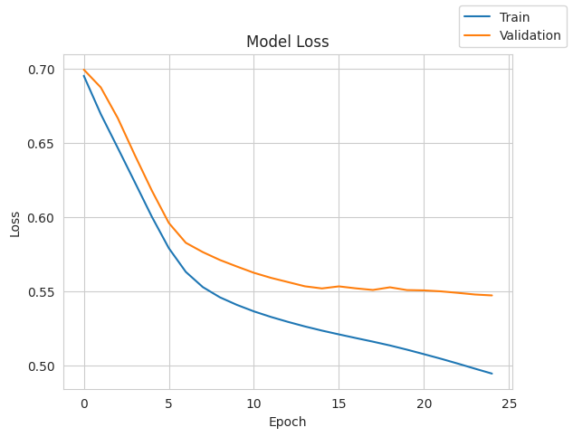
model_3_train_perf = model_performance_classification(model_3, X_train_smote, y_train_smote)
model_3_train_perf319/319 ━━━━━━━━━━━━━━━━━━━━ 1s 2ms/step
| Accuracy | Recall | Precision | F1 Score | |
|---|---|---|---|---|
| 0 | 0.759615 | 0.759615 | 0.760232 | 0.759473 |
model_3_valid_perf = model_performance_classification(model_3, X_valid, y_valid)
model_3_valid_perf50/50 ━━━━━━━━━━━━━━━━━━━━ 0s 2ms/step
| Accuracy | Recall | Precision | F1 Score | |
|---|---|---|---|---|
| 0 | 0.72375 | 0.72375 | 0.803664 | 0.747094 |
backend.clear_session()
#Fixing the seed for random number generators so that we can ensure we receive the same output everytime
np.random.seed(2)
random.seed(2)
tf.random.set_seed(2)sm = SMOTE(random_state=2)
X_train_smote, y_train_smote = sm.fit_resample(X_train, y_train)
print('After UpSampling, the shape of train_X: {}'.format(X_train_smote.shape))
print('After UpSampling, the shape of train_y: {} \n'.format(y_train_smote.shape))After UpSampling, the shape of train_X: (10192, 12)
After UpSampling, the shape of train_y: (10192,)
# Intializing the neural network
model_4 = Sequential()
model_4.add(Dense(14, activation='relu', input_dim=X_train_smote.shape[1]))
model_4.add(Dense(10, activation='relu'))
model_4.add(Dense(7, activation='relu'))
model_4.add(Dense(1, activation='sigmoid'))model_4.summary()Model: "sequential"
┏━━━━━━━━━━━━━━━━━━━━━━━━━━━━━━━━━┳━━━━━━━━━━━━━━━━━━━━━━━━┳━━━━━━━━━━━━━━━┓ ┃ Layer (type) ┃ Output Shape ┃ Param # ┃ ┡━━━━━━━━━━━━━━━━━━━━━━━━━━━━━━━━━╇━━━━━━━━━━━━━━━━━━━━━━━━╇━━━━━━━━━━━━━━━┩ │ dense (Dense) │ (None, 14) │ 182 │ ├─────────────────────────────────┼────────────────────────┼───────────────┤ │ dense_1 (Dense) │ (None, 10) │ 150 │ ├─────────────────────────────────┼────────────────────────┼───────────────┤ │ dense_2 (Dense) │ (None, 7) │ 77 │ ├─────────────────────────────────┼────────────────────────┼───────────────┤ │ dense_3 (Dense) │ (None, 1) │ 8 │ └─────────────────────────────────┴────────────────────────┴───────────────┘
Total params: 417 (1.63 KB)
Trainable params: 417 (1.63 KB)
Non-trainable params: 0 (0.00 B)
optimizer = tf.keras.optimizers.Adam()
metrics = [tf.keras.metrics.Recall()]
model_4.compile(loss='binary_crossentropy', optimizer=optimizer, metrics=metrics)model_4.summary()Model: "sequential"
┏━━━━━━━━━━━━━━━━━━━━━━━━━━━━━━━━━┳━━━━━━━━━━━━━━━━━━━━━━━━┳━━━━━━━━━━━━━━━┓ ┃ Layer (type) ┃ Output Shape ┃ Param # ┃ ┡━━━━━━━━━━━━━━━━━━━━━━━━━━━━━━━━━╇━━━━━━━━━━━━━━━━━━━━━━━━╇━━━━━━━━━━━━━━━┩ │ dense (Dense) │ (None, 14) │ 182 │ ├─────────────────────────────────┼────────────────────────┼───────────────┤ │ dense_1 (Dense) │ (None, 10) │ 150 │ ├─────────────────────────────────┼────────────────────────┼───────────────┤ │ dense_2 (Dense) │ (None, 7) │ 77 │ ├─────────────────────────────────┼────────────────────────┼───────────────┤ │ dense_3 (Dense) │ (None, 1) │ 8 │ └─────────────────────────────────┴────────────────────────┴───────────────┘
Total params: 417 (1.63 KB)
Trainable params: 417 (1.63 KB)
Non-trainable params: 0 (0.00 B)
history_4 = model_4.fit(
X_train_smote,
y_train_smote,
epochs=25,
batch_size=32,
validation_data=(X_valid, y_valid))Epoch 1/25 319/319 ━━━━━━━━━━━━━━━━━━━━ 4s 5ms/step - loss: 0.6848 - recall: 0.9274 - val_loss: 0.6658 - val_recall: 0.7025 Epoch 2/25 319/319 ━━━━━━━━━━━━━━━━━━━━ 1s 3ms/step - loss: 0.5798 - recall: 0.7264 - val_loss: 0.5566 - val_recall: 0.6718 Epoch 3/25 319/319 ━━━━━━━━━━━━━━━━━━━━ 1s 3ms/step - loss: 0.5341 - recall: 0.7217 - val_loss: 0.5414 - val_recall: 0.6564 Epoch 4/25 319/319 ━━━━━━━━━━━━━━━━━━━━ 1s 3ms/step - loss: 0.5233 - recall: 0.7310 - val_loss: 0.5358 - val_recall: 0.6656 Epoch 5/25 319/319 ━━━━━━━━━━━━━━━━━━━━ 1s 3ms/step - loss: 0.5148 - recall: 0.7374 - val_loss: 0.5322 - val_recall: 0.6626 Epoch 6/25 319/319 ━━━━━━━━━━━━━━━━━━━━ 1s 3ms/step - loss: 0.5060 - recall: 0.7479 - val_loss: 0.5245 - val_recall: 0.6718 Epoch 7/25 319/319 ━━━━━━━━━━━━━━━━━━━━ 1s 3ms/step - loss: 0.4980 - recall: 0.7546 - val_loss: 0.5202 - val_recall: 0.6871 Epoch 8/25 319/319 ━━━━━━━━━━━━━━━━━━━━ 1s 3ms/step - loss: 0.4906 - recall: 0.7600 - val_loss: 0.5166 - val_recall: 0.6933 Epoch 9/25 319/319 ━━━━━━━━━━━━━━━━━━━━ 1s 3ms/step - loss: 0.4833 - recall: 0.7659 - val_loss: 0.5154 - val_recall: 0.7147 Epoch 10/25 319/319 ━━━━━━━━━━━━━━━━━━━━ 2s 4ms/step - loss: 0.4768 - recall: 0.7732 - val_loss: 0.5065 - val_recall: 0.7239 Epoch 11/25 319/319 ━━━━━━━━━━━━━━━━━━━━ 1s 4ms/step - loss: 0.4714 - recall: 0.7742 - val_loss: 0.5009 - val_recall: 0.7147 Epoch 12/25 319/319 ━━━━━━━━━━━━━━━━━━━━ 1s 3ms/step - loss: 0.4668 - recall: 0.7751 - val_loss: 0.4971 - val_recall: 0.7147 Epoch 13/25 319/319 ━━━━━━━━━━━━━━━━━━━━ 1s 3ms/step - loss: 0.4627 - recall: 0.7762 - val_loss: 0.4930 - val_recall: 0.7178 Epoch 14/25 319/319 ━━━━━━━━━━━━━━━━━━━━ 1s 3ms/step - loss: 0.4591 - recall: 0.7802 - val_loss: 0.4931 - val_recall: 0.7393 Epoch 15/25 319/319 ━━━━━━━━━━━━━━━━━━━━ 1s 3ms/step - loss: 0.4559 - recall: 0.7838 - val_loss: 0.4895 - val_recall: 0.7423 Epoch 16/25 319/319 ━━━━━━━━━━━━━━━━━━━━ 1s 3ms/step - loss: 0.4530 - recall: 0.7856 - val_loss: 0.4879 - val_recall: 0.7454 Epoch 17/25 319/319 ━━━━━━━━━━━━━━━━━━━━ 1s 3ms/step - loss: 0.4491 - recall: 0.7824 - val_loss: 0.4838 - val_recall: 0.7423 Epoch 18/25 319/319 ━━━━━━━━━━━━━━━━━━━━ 1s 3ms/step - loss: 0.4450 - recall: 0.7827 - val_loss: 0.4803 - val_recall: 0.7423 Epoch 19/25 319/319 ━━━━━━━━━━━━━━━━━━━━ 1s 3ms/step - loss: 0.4408 - recall: 0.7824 - val_loss: 0.4751 - val_recall: 0.7393 Epoch 20/25 319/319 ━━━━━━━━━━━━━━━━━━━━ 1s 3ms/step - loss: 0.4369 - recall: 0.7837 - val_loss: 0.4743 - val_recall: 0.7393 Epoch 21/25 319/319 ━━━━━━━━━━━━━━━━━━━━ 1s 3ms/step - loss: 0.4335 - recall: 0.7870 - val_loss: 0.4715 - val_recall: 0.7393 Epoch 22/25 319/319 ━━━━━━━━━━━━━━━━━━━━ 2s 4ms/step - loss: 0.4307 - recall: 0.7863 - val_loss: 0.4687 - val_recall: 0.7423 Epoch 23/25 319/319 ━━━━━━━━━━━━━━━━━━━━ 1s 4ms/step - loss: 0.4285 - recall: 0.7870 - val_loss: 0.4693 - val_recall: 0.7454 Epoch 24/25 319/319 ━━━━━━━━━━━━━━━━━━━━ 1s 3ms/step - loss: 0.4264 - recall: 0.7899 - val_loss: 0.4670 - val_recall: 0.7454 Epoch 25/25 319/319 ━━━━━━━━━━━━━━━━━━━━ 1s 3ms/step - loss: 0.4247 - recall: 0.7877 - val_loss: 0.4686 - val_recall: 0.7485
plot(history_4, 'loss')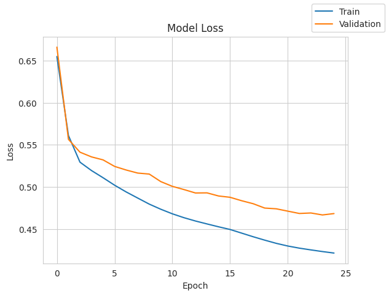
model_4_train_perf = model_performance_classification(model_4, X_train_smote, y_train_smote)
model_4_train_perf319/319 ━━━━━━━━━━━━━━━━━━━━ 1s 2ms/step
| Accuracy | Recall | Precision | F1 Score | |
|---|---|---|---|---|
| 0 | 0.799647 | 0.799647 | 0.799656 | 0.799645 |
model_4_valid_perf = model_performance_classification(model_4, X_valid, y_valid)
model_4_valid_perf50/50 ━━━━━━━━━━━━━━━━━━━━ 0s 2ms/step
| Accuracy | Recall | Precision | F1 Score | |
|---|---|---|---|---|
| 0 | 0.78375 | 0.78375 | 0.834323 | 0.799028 |
backend.clear_session()
#Fixing the seed for random number generators so that we can ensure we receive the same output everytime
np.random.seed(2)
random.seed(2)
tf.random.set_seed(2)model_5 = Sequential()
model_5.add(Dense(14, activation='relu', input_dim=X_train_smote.shape[1]))
model_5.add(Dropout(0.4))
model_5.add(Dense(10, activation='relu'))
model_5.add(Dropout(0.2))
model_5.add(Dense(7, activation='relu'))
model_5.add(Dropout(0.2))
model_5.add(Dense(1, activation='sigmoid'))optimizer = tf.keras.optimizers.Adam()
metrics = [tf.keras.metrics.Recall()]
model_5.compile(loss='binary_crossentropy', optimizer=optimizer, metrics=metrics)model_5.summary()Model: "sequential"
┏━━━━━━━━━━━━━━━━━━━━━━━━━━━━━━━━━┳━━━━━━━━━━━━━━━━━━━━━━━━┳━━━━━━━━━━━━━━━┓ ┃ Layer (type) ┃ Output Shape ┃ Param # ┃ ┡━━━━━━━━━━━━━━━━━━━━━━━━━━━━━━━━━╇━━━━━━━━━━━━━━━━━━━━━━━━╇━━━━━━━━━━━━━━━┩ │ dense (Dense) │ (None, 14) │ 182 │ ├─────────────────────────────────┼────────────────────────┼───────────────┤ │ dropout (Dropout) │ (None, 14) │ 0 │ ├─────────────────────────────────┼────────────────────────┼───────────────┤ │ dense_1 (Dense) │ (None, 10) │ 150 │ ├─────────────────────────────────┼────────────────────────┼───────────────┤ │ dropout_1 (Dropout) │ (None, 10) │ 0 │ ├─────────────────────────────────┼────────────────────────┼───────────────┤ │ dense_2 (Dense) │ (None, 7) │ 77 │ ├─────────────────────────────────┼────────────────────────┼───────────────┤ │ dropout_2 (Dropout) │ (None, 7) │ 0 │ ├─────────────────────────────────┼────────────────────────┼───────────────┤ │ dense_3 (Dense) │ (None, 1) │ 8 │ └─────────────────────────────────┴────────────────────────┴───────────────┘
Total params: 417 (1.63 KB)
Trainable params: 417 (1.63 KB)
Non-trainable params: 0 (0.00 B)
history_5 = model_5.fit(
X_train_smote,
y_train_smote,
epochs=25,
batch_size=32,
validation_data=(X_valid, y_valid))Epoch 1/25 319/319 ━━━━━━━━━━━━━━━━━━━━ 6s 10ms/step - loss: 0.7045 - recall: 0.5087 - val_loss: 0.6325 - val_recall: 0.6043 Epoch 2/25 319/319 ━━━━━━━━━━━━━━━━━━━━ 1s 4ms/step - loss: 0.6380 - recall: 0.6585 - val_loss: 0.5959 - val_recall: 0.6166 Epoch 3/25 319/319 ━━━━━━━━━━━━━━━━━━━━ 2s 3ms/step - loss: 0.6197 - recall: 0.6948 - val_loss: 0.5950 - val_recall: 0.6718 Epoch 4/25 319/319 ━━━━━━━━━━━━━━━━━━━━ 1s 3ms/step - loss: 0.6138 - recall: 0.7321 - val_loss: 0.5797 - val_recall: 0.6656 Epoch 5/25 319/319 ━━━━━━━━━━━━━━━━━━━━ 1s 3ms/step - loss: 0.6015 - recall: 0.7354 - val_loss: 0.5830 - val_recall: 0.6779 Epoch 6/25 319/319 ━━━━━━━━━━━━━━━━━━━━ 1s 3ms/step - loss: 0.5963 - recall: 0.7520 - val_loss: 0.5736 - val_recall: 0.6534 Epoch 7/25 319/319 ━━━━━━━━━━━━━━━━━━━━ 1s 3ms/step - loss: 0.5927 - recall: 0.7267 - val_loss: 0.5701 - val_recall: 0.6626 Epoch 8/25 319/319 ━━━━━━━━━━━━━━━━━━━━ 1s 3ms/step - loss: 0.5774 - recall: 0.7220 - val_loss: 0.5711 - val_recall: 0.6472 Epoch 9/25 319/319 ━━━━━━━━━━━━━━━━━━━━ 1s 3ms/step - loss: 0.5821 - recall: 0.7175 - val_loss: 0.5629 - val_recall: 0.6564 Epoch 10/25 319/319 ━━━━━━━━━━━━━━━━━━━━ 1s 3ms/step - loss: 0.5737 - recall: 0.7276 - val_loss: 0.5524 - val_recall: 0.6626 Epoch 11/25 319/319 ━━━━━━━━━━━━━━━━━━━━ 1s 4ms/step - loss: 0.5684 - recall: 0.7271 - val_loss: 0.5538 - val_recall: 0.6687 Epoch 12/25 319/319 ━━━━━━━━━━━━━━━━━━━━ 1s 5ms/step - loss: 0.5664 - recall: 0.7078 - val_loss: 0.5467 - val_recall: 0.6656 Epoch 13/25 319/319 ━━━━━━━━━━━━━━━━━━━━ 2s 3ms/step - loss: 0.5618 - recall: 0.7314 - val_loss: 0.5470 - val_recall: 0.6656 Epoch 14/25 319/319 ━━━━━━━━━━━━━━━━━━━━ 1s 3ms/step - loss: 0.5604 - recall: 0.7214 - val_loss: 0.5524 - val_recall: 0.6687 Epoch 15/25 319/319 ━━━━━━━━━━━━━━━━━━━━ 1s 3ms/step - loss: 0.5595 - recall: 0.7158 - val_loss: 0.5474 - val_recall: 0.6687 Epoch 16/25 319/319 ━━━━━━━━━━━━━━━━━━━━ 1s 3ms/step - loss: 0.5534 - recall: 0.7326 - val_loss: 0.5392 - val_recall: 0.6656 Epoch 17/25 319/319 ━━━━━━━━━━━━━━━━━━━━ 1s 3ms/step - loss: 0.5545 - recall: 0.7309 - val_loss: 0.5491 - val_recall: 0.6687 Epoch 18/25 319/319 ━━━━━━━━━━━━━━━━━━━━ 1s 3ms/step - loss: 0.5446 - recall: 0.7382 - val_loss: 0.5338 - val_recall: 0.6564 Epoch 19/25 319/319 ━━━━━━━━━━━━━━━━━━━━ 1s 3ms/step - loss: 0.5484 - recall: 0.7284 - val_loss: 0.5406 - val_recall: 0.6748 Epoch 20/25 319/319 ━━━━━━━━━━━━━━━━━━━━ 1s 3ms/step - loss: 0.5428 - recall: 0.7384 - val_loss: 0.5440 - val_recall: 0.6902 Epoch 21/25 319/319 ━━━━━━━━━━━━━━━━━━━━ 1s 3ms/step - loss: 0.5382 - recall: 0.7364 - val_loss: 0.5338 - val_recall: 0.6748 Epoch 22/25 319/319 ━━━━━━━━━━━━━━━━━━━━ 1s 5ms/step - loss: 0.5447 - recall: 0.7279 - val_loss: 0.5382 - val_recall: 0.6871 Epoch 23/25 319/319 ━━━━━━━━━━━━━━━━━━━━ 2s 3ms/step - loss: 0.5415 - recall: 0.7425 - val_loss: 0.5290 - val_recall: 0.6626 Epoch 24/25 319/319 ━━━━━━━━━━━━━━━━━━━━ 1s 3ms/step - loss: 0.5419 - recall: 0.7281 - val_loss: 0.5316 - val_recall: 0.6902 Epoch 25/25 319/319 ━━━━━━━━━━━━━━━━━━━━ 1s 3ms/step - loss: 0.5410 - recall: 0.7518 - val_loss: 0.5426 - val_recall: 0.6902
plot(history_5, 'loss')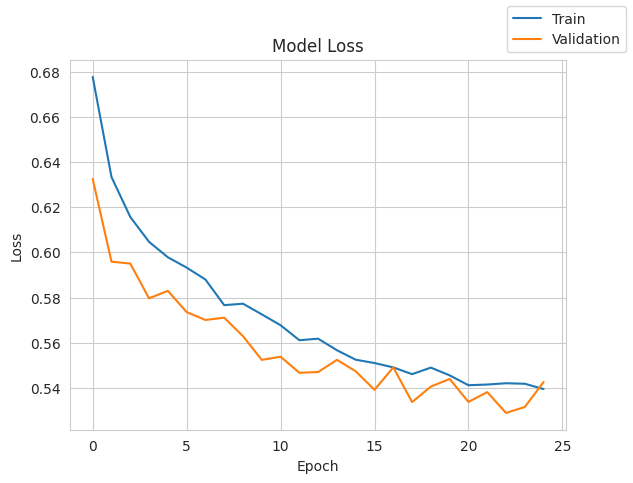
model_5_train_perf = model_performance_classification(model_5, X_train_smote, y_train_smote)
model_5_train_perf319/319 ━━━━━━━━━━━━━━━━━━━━ 1s 2ms/step
| Accuracy | Recall | Precision | F1 Score | |
|---|---|---|---|---|
| 0 | 0.767661 | 0.767661 | 0.767679 | 0.767657 |
model_5_valid_perf = model_performance_classification(model_5, X_valid, y_valid)
model_5_valid_perf50/50 ━━━━━━━━━━━━━━━━━━━━ 0s 2ms/step
| Accuracy | Recall | Precision | F1 Score | |
|---|---|---|---|---|
| 0 | 0.743125 | 0.743125 | 0.806426 | 0.762826 |
# training performance comparison
models_train_comp_df = pd.concat(
[
model_0_train_perf.T,
model_1_train_perf.T,
model_2_train_perf.T,
model_3_train_perf.T,
model_4_train_perf.T,
model_5_train_perf.T
#model_6_train_perf.T
],
axis=1,
)
models_train_comp_df.columns = [
"Neural Network (SGD Optimizer)",
"Neural Network (Adam optimizer)",
"Neural Network (Adam, dropout [0.4,0.2,0.2])",
"Neural Network (SGD, Balanced Data(SMOTE))",
"Neural Network (Adam, Balanced(SMOTE))",
"Neural Network (Adam, Balanced(SMOTE), dropout [0.4,0.2,0.2])"
]#Validation performance comparison
models_valid_comp_df = pd.concat(
[
model_0_valid_perf.T,
model_1_valid_perf.T,
model_2_valid_perf.T,
model_3_valid_perf.T,
model_4_valid_perf.T,
model_5_valid_perf.T
#model_6_valid_perf.T
],
axis=1,
)
models_valid_comp_df.columns = [
"Neural Network (SGD Optimizer)",
"Neural Network (Adam optimizer)",
"Neural Network (Adam, dropout [0.4,0.2,0.2])",
"Neural Network (SGD, Balanced Data(SMOTE))",
"Neural Network (Adam, Balanced(SMOTE))",
"Neural Network (Adam, Balanced(SMOTE), dropout [0.4,0.2,0.2])"
]models_train_comp_df| Neural Network (SGD Optimizer) | Neural Network (Adam optimizer) | Neural Network (Adam, dropout [0.4,0.2,0.2]) | Neural Network (SGD, Balanced Data(SMOTE)) | Neural Network (Adam, Balanced(SMOTE)) | Neural Network (Adam, Balanced(SMOTE), dropout [0.4,0.2,0.2]) | |
|---|---|---|---|---|---|---|
| Accuracy | 0.786719 | 0.790625 | 0.739375 | 0.759615 | 0.799647 | 0.767661 |
| Recall | 0.786719 | 0.790625 | 0.739375 | 0.759615 | 0.799647 | 0.767661 |
| Precision | 0.828403 | 0.839275 | 0.813073 | 0.760232 | 0.799656 | 0.767679 |
| F1 Score | 0.800249 | 0.805213 | 0.760819 | 0.759473 | 0.799645 | 0.767657 |
models_valid_comp_df| Neural Network (SGD Optimizer) | Neural Network (Adam optimizer) | Neural Network (Adam, dropout [0.4,0.2,0.2]) | Neural Network (SGD, Balanced Data(SMOTE)) | Neural Network (Adam, Balanced(SMOTE)) | Neural Network (Adam, Balanced(SMOTE), dropout [0.4,0.2,0.2]) | |
|---|---|---|---|---|---|---|
| Accuracy | 0.766875 | 0.774375 | 0.723125 | 0.723750 | 0.783750 | 0.743125 |
| Recall | 0.766875 | 0.774375 | 0.723125 | 0.723750 | 0.783750 | 0.743125 |
| Precision | 0.811224 | 0.826165 | 0.802043 | 0.803664 | 0.834323 | 0.806426 |
| F1 Score | 0.781842 | 0.790370 | 0.746390 | 0.747094 | 0.799028 | 0.762826 |
models_train_comp_df.loc["Recall"] - models_valid_comp_df.loc["Recall"]| Recall | |
|---|---|
| Neural Network (SGD Optimizer) | 0.019844 |
| Neural Network (Adam optimizer) | 0.016250 |
| Neural Network (Adam, dropout [0.4,0.2,0.2]) | 0.016250 |
| Neural Network (SGD, Balanced Data(SMOTE)) | 0.035865 |
| Neural Network (Adam, Balanced(SMOTE)) | 0.015897 |
| Neural Network (Adam, Balanced(SMOTE), dropout [0.4,0.2,0.2]) | 0.024536 |
Final Model (Adam Optimizer + SMOTE balanced)
backend.clear_session()
#Fixing the seed for random number generators so that we can ensure we receive the same output everytime
np.random.seed(2)
random.seed(2)
tf.random.set_seed(2)sm = SMOTE(random_state=2)
X_train_smote, y_train_smote = sm.fit_resample(X_train, y_train)
print('After UpSampling, the shape of train_X: {}'.format(X_train_smote.shape))
print('After UpSampling, the shape of train_y: {} \n'.format(y_train_smote.shape))# Intializing the neural network
model_4 = Sequential()
model_4.add(Dense(14, activation='relu', input_dim=X_train_smote.shape[1]))
model_4.add(Dense(10, activation='relu'))
model_4.add(Dense(7, activation='relu'))
model_4.add(Dense(1, activation='sigmoid'))model_1.summary()Model: "sequential"
┏━━━━━━━━━━━━━━━━━━━━━━━━━━━━━━━━━┳━━━━━━━━━━━━━━━━━━━━━━━━┳━━━━━━━━━━━━━━━┓ ┃ Layer (type) ┃ Output Shape ┃ Param # ┃ ┡━━━━━━━━━━━━━━━━━━━━━━━━━━━━━━━━━╇━━━━━━━━━━━━━━━━━━━━━━━━╇━━━━━━━━━━━━━━━┩ │ dense (Dense) │ (None, 14) │ 182 │ ├─────────────────────────────────┼────────────────────────┼───────────────┤ │ dense_1 (Dense) │ (None, 10) │ 150 │ ├─────────────────────────────────┼────────────────────────┼───────────────┤ │ dense_2 (Dense) │ (None, 7) │ 77 │ ├─────────────────────────────────┼────────────────────────┼───────────────┤ │ dense_3 (Dense) │ (None, 1) │ 8 │ └─────────────────────────────────┴────────────────────────┴───────────────┘
Total params: 1,253 (4.90 KB)
Trainable params: 417 (1.63 KB)
Non-trainable params: 0 (0.00 B)
Optimizer params: 836 (3.27 KB)
optimizer = tf.keras.optimizers.Adam()
metrics = [tf.keras.metrics.Recall()]
model_4.compile(loss='binary_crossentropy', optimizer=optimizer, metrics=metrics)history_4 = model_4.fit(
X_train_smote,
y_train_smote,
epochs=25,
batch_size=32,
validation_data=(X_valid, y_valid))Epoch 1/25 319/319 ━━━━━━━━━━━━━━━━━━━━ 3s 5ms/step - loss: 0.6848 - recall: 0.9274 - val_loss: 0.6658 - val_recall: 0.7025 Epoch 2/25 319/319 ━━━━━━━━━━━━━━━━━━━━ 1s 3ms/step - loss: 0.5798 - recall: 0.7264 - val_loss: 0.5566 - val_recall: 0.6718 Epoch 3/25 319/319 ━━━━━━━━━━━━━━━━━━━━ 1s 3ms/step - loss: 0.5341 - recall: 0.7217 - val_loss: 0.5414 - val_recall: 0.6564 Epoch 4/25 319/319 ━━━━━━━━━━━━━━━━━━━━ 1s 3ms/step - loss: 0.5233 - recall: 0.7310 - val_loss: 0.5358 - val_recall: 0.6656 Epoch 5/25 319/319 ━━━━━━━━━━━━━━━━━━━━ 1s 4ms/step - loss: 0.5148 - recall: 0.7374 - val_loss: 0.5322 - val_recall: 0.6626 Epoch 6/25 319/319 ━━━━━━━━━━━━━━━━━━━━ 2s 3ms/step - loss: 0.5060 - recall: 0.7479 - val_loss: 0.5245 - val_recall: 0.6718 Epoch 7/25 319/319 ━━━━━━━━━━━━━━━━━━━━ 1s 3ms/step - loss: 0.4980 - recall: 0.7546 - val_loss: 0.5202 - val_recall: 0.6871 Epoch 8/25 319/319 ━━━━━━━━━━━━━━━━━━━━ 1s 3ms/step - loss: 0.4906 - recall: 0.7600 - val_loss: 0.5166 - val_recall: 0.6933 Epoch 9/25 319/319 ━━━━━━━━━━━━━━━━━━━━ 1s 3ms/step - loss: 0.4833 - recall: 0.7659 - val_loss: 0.5154 - val_recall: 0.7147 Epoch 10/25 319/319 ━━━━━━━━━━━━━━━━━━━━ 1s 3ms/step - loss: 0.4768 - recall: 0.7732 - val_loss: 0.5065 - val_recall: 0.7239 Epoch 11/25 319/319 ━━━━━━━━━━━━━━━━━━━━ 1s 3ms/step - loss: 0.4714 - recall: 0.7742 - val_loss: 0.5009 - val_recall: 0.7147 Epoch 12/25 319/319 ━━━━━━━━━━━━━━━━━━━━ 1s 3ms/step - loss: 0.4668 - recall: 0.7751 - val_loss: 0.4971 - val_recall: 0.7147 Epoch 13/25 319/319 ━━━━━━━━━━━━━━━━━━━━ 1s 3ms/step - loss: 0.4627 - recall: 0.7762 - val_loss: 0.4930 - val_recall: 0.7178 Epoch 14/25 319/319 ━━━━━━━━━━━━━━━━━━━━ 1s 3ms/step - loss: 0.4591 - recall: 0.7802 - val_loss: 0.4931 - val_recall: 0.7393 Epoch 15/25 319/319 ━━━━━━━━━━━━━━━━━━━━ 1s 4ms/step - loss: 0.4559 - recall: 0.7838 - val_loss: 0.4895 - val_recall: 0.7423 Epoch 16/25 319/319 ━━━━━━━━━━━━━━━━━━━━ 1s 4ms/step - loss: 0.4530 - recall: 0.7856 - val_loss: 0.4879 - val_recall: 0.7454 Epoch 17/25 319/319 ━━━━━━━━━━━━━━━━━━━━ 2s 3ms/step - loss: 0.4491 - recall: 0.7824 - val_loss: 0.4838 - val_recall: 0.7423 Epoch 18/25 319/319 ━━━━━━━━━━━━━━━━━━━━ 1s 3ms/step - loss: 0.4450 - recall: 0.7827 - val_loss: 0.4803 - val_recall: 0.7423 Epoch 19/25 319/319 ━━━━━━━━━━━━━━━━━━━━ 1s 3ms/step - loss: 0.4408 - recall: 0.7824 - val_loss: 0.4751 - val_recall: 0.7393 Epoch 20/25 319/319 ━━━━━━━━━━━━━━━━━━━━ 1s 3ms/step - loss: 0.4369 - recall: 0.7837 - val_loss: 0.4743 - val_recall: 0.7393 Epoch 21/25 319/319 ━━━━━━━━━━━━━━━━━━━━ 1s 3ms/step - loss: 0.4335 - recall: 0.7870 - val_loss: 0.4715 - val_recall: 0.7393 Epoch 22/25 319/319 ━━━━━━━━━━━━━━━━━━━━ 1s 3ms/step - loss: 0.4307 - recall: 0.7863 - val_loss: 0.4687 - val_recall: 0.7423 Epoch 23/25 319/319 ━━━━━━━━━━━━━━━━━━━━ 1s 3ms/step - loss: 0.4285 - recall: 0.7870 - val_loss: 0.4693 - val_recall: 0.7454 Epoch 24/25 319/319 ━━━━━━━━━━━━━━━━━━━━ 1s 3ms/step - loss: 0.4264 - recall: 0.7899 - val_loss: 0.4670 - val_recall: 0.7454 Epoch 25/25 319/319 ━━━━━━━━━━━━━━━━━━━━ 1s 3ms/step - loss: 0.4247 - recall: 0.7877 - val_loss: 0.4686 - val_recall: 0.7485
y_train_pred = model_1.predict(X_train_smote)
y_valid_pred = model_1.predict(X_valid)
y_test_pred = model_1.predict(X_test)319/319 ━━━━━━━━━━━━━━━━━━━━ 1s 2ms/step 50/50 ━━━━━━━━━━━━━━━━━━━━ 0s 2ms/step 63/63 ━━━━━━━━━━━━━━━━━━━━ 0s 1ms/step
print("Classification Report - Train data",end="\n\n")
cr = classification_report(y_train_smote,y_train_pred>0.5)
print(cr)Classification Report - Train data
precision recall f1-score support
0.0 0.78 0.80 0.79 5096
1.0 0.79 0.77 0.78 5096
accuracy 0.78 10192
macro avg 0.78 0.78 0.78 10192
weighted avg 0.78 0.78 0.78 10192
print("Classification Report - Validation data",end="\n\n")
cr = classification_report(y_valid,y_valid_pred>0.5)
print(cr)Classification Report - Validation data
precision recall f1-score support
0.0 0.92 0.79 0.85 1274
1.0 0.47 0.73 0.57 326
accuracy 0.77 1600
macro avg 0.69 0.76 0.71 1600
weighted avg 0.83 0.77 0.79 1600
print("Classification Report - Test data",end="\n\n")
cr = classification_report(y_test,y_test_pred>0.5)
print(cr)Classification Report - Test data
precision recall f1-score support
0.0 0.93 0.78 0.85 1593
1.0 0.47 0.75 0.58 407
accuracy 0.78 2000
macro avg 0.70 0.77 0.71 2000
weighted avg 0.83 0.78 0.79 2000
A neural network model trained using the Adam optimizer on SMOTE-balanced data achieved a recall of 78.4% on the validation set.
This means the model correctly identifies nearly 4 out of 5 customers likely to churn.
It also maintains a high precision of 83.4%, ensuring that most flagged customers are genuinely at risk.
This balance between high recall and precision makes the model highly actionable for retention efforts.
Use the model to score customers weekly/monthly on churn probability.
Integrate this score into the CRM system or a churn dashboard.
Rank customers by risk to focus retention efforts.
Examples of retention tactics:
Exclusive offers or discounts
Personalized outreach from customer success teams
Enhanced support or loyalty program invitations
Marketing → personalized email campaigns
Customer Support → proactive check-ins with at-risk accounts
Power Ahead ___